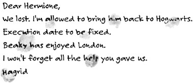

Harry, Ron, and Hermione looked at one another. They had never seen
eye to eye with Hagrid about what he called “interesting creatures” and
other people called “terrifying monsters.” On the other hand, there didn’t
seem to be any particular harm in Buckbeak. In fact, by Hagrid’s usual
standards, he was positively cute.
“You’ll have to put up a good strong defense, Hagrid,” said Hermione,
sitting down and laying a hand on Hagrid’s massive forearm. “I’m sure you
can prove Buckbeak is safe.”
“Won’t make no diff’rence!” sobbed Hagrid. “Them Disposal devils,
they’re all in Lucius Malfoy’s pocket! Scared o’ him! An’ if I lose the case,
Buckbeak —”
Hagrid drew his finger swiftly across his throat, then gave a great wail
and lurched forward, his face in his arms.
“What about Dumbledore, Hagrid?” said Harry.
“He’s done more’n enough fer me already,” groaned Hagrid. “Got
enough on his plate what with keepin’ them dementors outta the castle, an’
Sirius Black lurkin’ around —”
Ron and Hermione looked quickly at Harry, as though expecting him to
start berating Hagrid for not telling him the truth about Black. But Harry
couldn’t bring himself to do it, not now that he saw Hagrid so miserable and
scared.
“Listen, Hagrid,” he said, “you can’t give up. Hermione’s right, you just
need a good defense. You can call us as witnesses —”
“I’m sure I’ve read about a case of hippogriff-baiting,” said Hermione
thoughtfully, “where the hippogriff got off. I’ll look it up for you, Hagrid,
and see exactly what happened.”
Hagrid howled still more loudly. Harry and Hermione looked at Ron to
help them.
“Er — shall I make a cup of tea?” said Ron.
Harry stared at him.
“It’s what my mum does whenever someone’s upset,” Ron muttered,
shrugging.
At last, after many more assurances of help, with a steaming mug of tea
in front of him, Hagrid blew his nose on a handkerchief the size of a
tablecloth and said, “Yer right. I can’ afford to go ter pieces. Gotta pull
meself together. …”
Fang the boarhound came timidly out from under the table and laid his
head on Hagrid’s knee.
“I’ve not bin meself lately,” said Hagrid, stroking Fang with one hand
and mopping his face with the other. “Worried abou’ Buckbeak, an’ no one
likin’ me classes —”
“We do like them!” lied Hermione at once.
“Yeah, they’re great!” said Ron, crossing his fingers under the table. “Er
— how are the flobberworms?”
“Dead,” said Hagrid gloomily. “Too much lettuce.”
“Oh no!” said Ron, his lip twitching.
“An’ them dementors make me feel ruddy terrible an’ all,” said Hagrid,
with a sudden shudder. “Gotta walk past ’em ev’ry time I want a drink in
the Three Broomsticks. ’S like bein’ back in Azkaban —”
He fell silent, gulping his tea. Harry, Ron, and Hermione watched him
breathlessly. They had never heard Hagrid talk about his brief spell in
Azkaban before. After a pause, Hermione said timidly, “Is it awful in there,
Hagrid?”
“Yeh’ve no idea,” said Hagrid quietly. “Never bin anywhere like it.
Thought I was goin’ mad. Kep’ goin’ over horrible stuff in me mind … the
day I got expelled from Hogwarts … day me dad died … day I had ter let
Norbert go. …”
His eyes filled with tears. Norbert was the baby dragon Hagrid had once
won in a game of cards.
“Yeh can’ really remember who yeh are after a while. An’ yeh can’ see
the point o’ livin’ at all. I used ter hope I’d jus’ die in me sleep. … When
they let me out, it was like bein’ born again, ev’rythin’ came floodin’ back,
it was the bes’ feelin’ in the world. Mind, the dementors weren’t keen on
lettin’ me go.”
“But you were innocent!” said Hermione.
Hagrid snorted.
“Think that matters to them? They don’ care. Long as they’ve got a
couple o’ hundred humans stuck there with ’em, so they can leech all the
happiness out of ’em, they don’ give a damn who’s guilty an’ who’s not.”
Hagrid went quiet for a moment, staring into his tea. Then he said
quietly, “Thought o’ jus’ letting Buckbeak go … tryin’ ter make him fly
away … but how d’yeh explain ter a hippogriff it’s gotta go inter hidin’?
An’ — an’ I’m scared o’ breakin’ the law. …” He looked up at them, tears
leaking down his face again. “I don’ ever want ter go back ter Azkaban.”
The trip to Hagrid’s, though far from fun, had nevertheless had the effect
Ron and Hermione had hoped. Though Harry had by no means forgotten
about Black, he couldn’t brood constantly on revenge if he wanted to help
Hagrid win his case against the Committee for the Disposal of Dangerous
Creatures. He, Ron, and Hermione went to the library the next day and
returned to the empty common room laden with books that might help
prepare a defense for Buckbeak. The three of them sat in front of the
roaring fire, slowly turning the pages of dusty volumes about famous cases
of marauding beasts, speaking occasionally when they ran across something
relevant.
“Here’s something … there was a case in 1722 … but the hippogriff was
convicted — ugh, look what they did to it, that’s disgusting —”
“This might help, look — a manticore savaged someone in 1296, and
they let the manticore off — oh — no, that was only because everyone was
too scared to go near it. …”
Meanwhile, in the rest of the castle, the usual magnificent Christmas
decorations had been put up, despite the fact that hardly any of the students
remained to enjoy them. Thick streamers of holly and mistletoe were strung
along the corridors, mysterious lights shone from inside every suit of armor,
and the Great Hall was filled with its usual twelve Christmas trees,
glittering with golden stars. A powerful and delicious smell of cooking
pervaded the corridors, and by Christmas Eve, it had grown so strong that
even Scabbers poked his nose out of the shelter of Ron’s pocket to sniff
hopefully at the air.
On Christmas morning, Harry was woken by Ron throwing his pillow at
him.
“Oy! Presents!”
Harry reached for his glasses and put them on, squinting through the
semi-darkness to the foot of his bed, where a small heap of parcels had
appeared. Ron was already ripping the paper off his own presents.
“Another sweater from Mum … maroon again … see if you’ve got one.”
Harry had. Mrs. Weasley had sent him a scarlet sweater with the
Gryffindor lion knitted on the front, also a dozen home-baked mince pies,
some Christmas cake, and a box of nut brittle. As he moved all these things
aside, he saw a long, thin package lying underneath.
“What’s that?” said Ron, looking over, a freshly unwrapped pair of
maroon socks in his hand.
“Dunno …”
Harry ripped the parcel open and gasped as a magnificent, gleaming
broomstick rolled out onto his bedspread. Ron dropped his socks and
jumped off his bed for a closer look.
“I don’t believe it,” he said hoarsely.
It was a Firebolt, identical to the dream broom Harry had gone to see
every day in Diagon Alley. Its handle glittered as he picked it up. He could
feel it vibrating and let go; it hung in midair, unsupported, at exactly the
right height for him to mount it. His eyes moved from the golden
registration number at the top of the handle, right down to the perfectly
smooth, streamlined birch twigs that made up the tail.
“Who sent it to you?” said Ron in a hushed voice.
“Look and see if there’s a card,” said Harry.
Ron ripped apart the Firebolt’s wrappings.
“Nothing! Blimey, who’d spend that much on you?”
“Well,” said Harry, feeling stunned, “I’m betting it wasn’t the Dursleys.”
“I bet it was Dumbledore,” said Ron, now walking around and around the
Firebolt, taking in every glorious inch. “He sent you the Invisibility Cloak
anonymously. …”
“That was my dad’s, though,” said Harry. “Dumbledore was just passing
it on to me. He wouldn’t spend hundreds of Galleons on me. He can’t go
giving students stuff like this —”
“That’s why he wouldn’t say it was from him!” said Ron. “In case some
git like Malfoy said it was favoritism. Hey, Harry” — Ron gave a great
whoop of laughter — “Malfoy! Wait till he sees you on this! He’ll be sick as
a pig! This is an international standard broom, this is!”
“I can’t believe this,” Harry muttered, running a hand along the Firebolt,
while Ron sank onto Harry’s bed, laughing his head off at the thought of
Malfoy. “Who — ?”
“I know,” said Ron, controlling himself, “I know who it could’ve been —
Lupin!”
“What?” said Harry, now starting to laugh himself. “Lupin? Listen, if he
had this much gold, he’d be able to buy himself some new robes.”
“Yeah, but he likes you,” said Ron. “And he was away when your
Nimbus got smashed, and he might’ve heard about it and decided to visit
Diagon Alley and get this for you —”
“What d’you mean, he was away?” said Harry. “He was ill when I was
playing in that match.”
“Well, he wasn’t in the hospital wing,” said Ron. “I was there, cleaning
out the bedpans on that detention from Snape, remember?”
Harry frowned at Ron.
“I can’t see Lupin affording something like this.”
“What’re you two laughing about?”
Hermione had just come in, wearing her dressing gown and carrying
Crookshanks, who was looking very grumpy, with a string of tinsel tied
“Don’t bring him in here!” said Ron, hurriedly snatching Scabbers from
the depths of his bed and stowing him in his pajama pocket. But Hermione
wasn’t listening. She dropped Crookshanks onto Seamus’s empty bed and
stared, open-mouthed, at the Firebolt.
“Oh, Harry! Who sent you that?”
“No idea,” said Harry. “There wasn’t a card or anything with it.”
To his great surprise, Hermione did not appear either excited or intrigued
by the news. On the contrary, her face fell, and she bit her lip.
“What’s the matter with you?” said Ron.
“I don’t know,” said Hermione slowly, “but it’s a bit odd, isn’t it? I mean,
this is supposed to be quite a good broom, isn’t it?”
Ron sighed exasperatedly.
“It’s the best broom there is, Hermione,” he said.
“So it must’ve been really expensive. …”
“Probably cost more than all the Slytherins’ brooms put together,” said
Ron happily.
“Well … who’d send Harry something as expensive as that, and not even
tell him they’d sent it?” said Hermione.
“Who cares?” said Ron impatiently. “Listen, Harry, can I have a go on it?
Can I?”
“I don’t think anyone should ride that broom just yet!” said Hermione
shrilly.
Harry and Ron looked at her.
“What d’you think Harry’s going to do with it — sweep the floor?” said
Ron.
But before Hermione could answer, Crookshanks sprang from Seamus’s
bed, right at Ron’s chest.
“GET — HIM — OUT — OF — HERE!” Ron bellowed as
Crookshanks’s claws ripped his pajamas and Scabbers attempted a wild
escape over his shoulder. Ron seized Scabbers by the tail and aimed a
misjudged kick at Crookshanks that hit the trunk at the end of Harry’s bed,
knocking it over and causing Ron to hop up and down, howling with pain.
Crookshanks’s fur suddenly stood on end. A shrill, tinny whistling was
filling the room. The Pocket Sneakoscope had become dislodged from
Uncle Vernon’s old socks and was whirling and gleaming on the floor.
“I forgot about that!” Harry said, bending down and picking up the
Sneakoscope. “I never wear those socks if I can help it. …”
The Sneakoscope whirled and whistled in his palm. Crookshanks was
hissing and spitting at it.
“You’d better take that cat out of here, Hermione,” said Ron furiously,
sitting on Harry’s bed nursing his toe. “Can’t you shut that thing up?” he
added to Harry as Hermione strode out of the room, Crookshanks’s yellow
eyes still fixed maliciously on Ron.
Harry stuffed the Sneakoscope back inside the socks and threw it back
into his trunk. All that could be heard now were Ron’s stifled moans of pain
and rage. Scabbers was huddled in Ron’s hands. It had been a while since
Harry had seen him out of Ron’s pocket, and he was unpleasantly surprised
to see that Scabbers, once so fat, was now very skinny; patches of fur
seemed to have fallen out too.
“He’s not looking too good, is he?” Harry said.
“It’s stress!” said Ron. “He’d be fine if that big stupid furball left him
alone!”
But Harry, remembering what the woman at the Magical Menagerie had
said about rats living only three years, couldn’t help feeling that unless
Scabbers had powers he had never revealed, he was reaching the end of his
life. And despite Ron’s frequent complaints that Scabbers was both boring
and useless, he was sure Ron would be very miserable if Scabbers died.
Christmas spirit was definitely thin on the ground in the Gryffindor
common room that morning. Hermione had shut Crookshanks in her
dormitory, but was furious with Ron for trying to kick him; Ron was still
fuming about Crookshanks’s fresh attempt to eat Scabbers. Harry gave up
trying to make them talk to each other and devoted himself to examining
the Firebolt, which he had brought down to the common room with him.
For some reason this seemed to annoy Hermione as well; she didn’t say
anything, but she kept looking darkly at the broom as though it too had been
criticizing her cat.
At lunchtime they went down to the Great Hall, to find that the House
tables had been moved against the walls again, and that a single table, set
for twelve, stood in the middle of the room. Professors Dumbledore,
McGonagall, Snape, Sprout, and Flitwick were there, along with Filch, the
caretaker, who had taken off his usual brown coat and was wearing a very
old and rather moldy-looking tailcoat. There were only three other students,
two extremely nervous-looking first years and a sullen-faced Slytherin fifth
year.
“Merry Christmas!” said Dumbledore as Harry, Ron, and Hermione
approached the table. “As there are so few of us, it seemed foolish to use
the House tables. … Sit down, sit down!”
Harry, Ron, and Hermione sat down side by side at the end of the table.
“Crackers!” said Dumbledore enthusiastically, offering the end of a large
silver noisemaker to Snape, who took it reluctantly and tugged. With a bang
like a gunshot, the cracker flew apart to reveal a large, pointed witch’s hat
topped with a stuffed vulture.
Harry, remembering the boggart, caught Ron’s eye and they both
grinned; Snape’s mouth thinned and he pushed the hat toward Dumbledore,
who swapped it for his wizard’s hat at once.
“Dig in!” he advised the table, beaming around.
As Harry was helping himself to roast potatoes, the doors of the Great
Hall opened again. It was Professor Trelawney, gliding toward them as
though on wheels. She had put on a green sequined dress in honor of the
occasion, making her look more than ever like a glittering, oversized
dragonfly.
“Sibyll, this is a pleasant surprise!” said Dumbledore, standing up.
“I have been crystal gazing, Headmaster,” said Professor Trelawney in
her mistiest, most faraway voice, “and to my astonishment, I saw myself
abandoning my solitary luncheon and coming to join you. Who am I to
refuse the promptings of fate? I at once hastened from my tower, and I do
beg you to forgive my lateness. …”
“Certainly, certainly,” said Dumbledore, his eyes twinkling. “Let me
draw you up a chair —”
And he did indeed draw a chair in midair with his wand, which revolved
for a few seconds before falling with a thud between Professors Snape and
McGonagall. Professor Trelawney, however, did not sit down; her
enormous eyes had been roving around the table, and she suddenly uttered a
kind of soft scream.
“I dare not, Headmaster! If I join the table, we shall be thirteen! Nothing
could be more unlucky! Never forget that when thirteen dine together, the
first to rise will be the first to die!”
“We’ll risk it, Sibyll,” said Professor McGonagall impatiently. “Do sit
down, the turkey’s getting stone cold.”
Professor Trelawney hesitated, then lowered herself into the empty chair,
eyes shut and mouth clenched tight, as though expecting a thunderbolt to hit
the table. Professor McGonagall poked a large spoon into the nearest
tureen.
“Tripe, Sibyll?”
Professor Trelawney ignored her. Eyes open again, she looked around
once more and said, “But where is dear Professor Lupin?”
“I’m afraid the poor fellow is ill again,” said Dumbledore, indicating that
everybody should start serving themselves. “Most unfortunate that it should
happen on Christmas Day.”
“But surely you already knew that, Sibyll?” said Professor McGonagall,
her eyebrows raised.
Professor Trelawney gave Professor McGonagall a very cold look.
“Certainly I knew, Minerva,” she said quietly. “But one does not parade
the fact that one is All-Knowing. I frequently act as though I am not
possessed of the Inner Eye, so as not to make others nervous.”
“That explains a great deal,” said Professor McGonagall tartly.
Professor Trelawney’s voice suddenly became a good deal less misty.
“If you must know, Minerva, I have seen that poor Professor Lupin will
not be with us for very long. He seems aware, himself, that his time is short.
He positively fled when I offered to crystal gaze for him —”
“Imagine that,” said Professor McGonagall dryly.
“I doubt,” said Dumbledore, in a cheerful but slightly raised voice, which
put an end to Professor McGonagall and Professor Trelawney’s
conversation, “that Professor Lupin is in any immediate danger. Severus,
you’ve made the potion for him again?”
“Yes, Headmaster,” said Snape.
“Good,” said Dumbledore. “Then he should be up and about in no time.
… Derek, have you had any of these chipolatas? They’re excellent.”
The first-year boy went furiously red on being addressed directly by
Dumbledore, and took the platter of sausages with trembling hands.
Professor Trelawney behaved almost normally until the very end of
Christmas dinner, two hours later. Full to bursting with Christmas dinner
and still wearing their party hats, Harry and Ron got up first from the table
and she shrieked loudly.
“My dears! Which of you left his seat first? Which?”
“Dunno,” said Ron, looking uneasily at Harry.
“I doubt it will make much difference,” said Professor McGonagall
coldly, “unless a mad axe-man is waiting outside the doors to slaughter the
first into the entrance hall.”
Even Ron laughed. Professor Trelawney looked highly affronted.
“Coming?” Harry said to Hermione.
“No,” Hermione muttered, “I want a quick word with Professor
McGonagall.”
“Probably trying to see if she can take any more classes,” yawned Ron as
they made their way into the entrance hall, which was completely devoid of
mad axe-men.
When they reached the portrait hole, they found Sir Cadogan enjoying a
Christmas party with a couple of monks, several previous headmasters of
Hogwarts, and his fat pony. He pushed up his visor and toasted them with a
flagon of mead.
“Merry — hic — Christmas! Password?”
“Scurvy cur,” said Ron.
“And the same to you, sir!” roared Sir Cadogan as the painting swung
forward to admit them.
Harry went straight up to the dormitory, collected the Firebolt and the
Broomstick Servicing Kit Hermione had given him for his birthday, brought
them downstairs, and tried to find something to do to the Firebolt; however,
there were no bent twigs to clip, and the handle was so shiny already it
seemed pointless to polish it. He and Ron simply sat admiring it from every
angle until the portrait hole opened, and Hermione came in, accompanied
by Professor McGonagall.
Though Professor McGonagall was head of Gryffindor House, Harry had
seen her in the common room only once before, and that had been to make
a very grave announcement. He and Ron stared at her, both holding the
Firebolt. Hermione walked around them, sat down, picked up the nearest
book, and hid her face behind it.
“So that’s it, is it?” said Professor McGonagall beadily, walking over to
the fireside and staring at the Firebolt. “Miss Granger has just informed me
that you have been sent a broomstick, Potter.”
Harry and Ron looked around at Hermione. They could see her forehead
reddening over the top of her book, which was upside down.
“May I?” said Professor McGonagall, but she didn’t wait for an answer
before pulling the Firebolt out of their hands. She examined it carefully
from handle to twig-ends. “Hmm. And there was no note at all, Potter? No
card? No message of any kind?”
“No,” said Harry blankly.
“I see … ,” said Professor McGonagall. “Well, I’m afraid I will have to
take this, Potter.”
“W — what?” said Harry, scrambling to his feet. “Why?”
“It will need to be checked for jinxes,” said Professor McGonagall. “Of
course, I’m no expert, but I daresay Madam Hooch and Professor Flitwick
will strip it down —”
“Strip it down?” repeated Ron, as though Professor McGonagall was
mad.
“It shouldn’t take more than a few weeks,” said Professor McGonagall.
“You will have it back if we are sure it is jinx-free.”
“There’s nothing wrong with it!” said Harry, his voice shaking slightly.
“Honestly, Professor —”
“You can’t know that, Potter,” said Professor McGonagall, quite kindly,
“not until you’ve flown it, at any rate, and I’m afraid that is out of the
question until we are certain that it has not been tampered with. I shall keep
you informed.”
Professor McGonagall turned on her heel and carried the Firebolt out of
the portrait hole, which closed behind her. Harry stood staring after her, the
tin of High-Finish Polish still clutched in his hands. Ron, however, rounded
on Hermione.
“What did you go running to McGonagall for?”
Hermione threw her book aside. She was still pink in the face, but stood
up and faced Ron defiantly.
“Because I thought — and Professor McGonagall agrees with me — that
that broom was probably sent to Harry by Sirius Black!”
The Patronus
Harry knew that Hermione had meant well, but that didn’t stop him from
being angry with her. He had been the owner of the best broom in the world
for a few short hours, and now, because of her interference, he didn’t know
whether he would ever see it again. He was positive that there was nothing
wrong with the Firebolt now, but what sort of state would it be in once it
had been subjected to all sorts of anti-jinx tests?
Ron was furious with Hermione too. As far as he was concerned, the
stripping-down of a brand-new Firebolt was nothing less than criminal
damage. Hermione, who remained convinced that she had acted for the
best, started avoiding the common room. Harry and Ron supposed she had
taken refuge in the library and didn’t try to persuade her to come back. All
in all, they were glad when the rest of the school returned shortly after New
Year, and Gryffindor Tower became crowded and noisy again.
Wood sought Harry out on the night before term started.
“Had a good Christmas?” he said, and then, without waiting for an
answer, he sat down, lowered his voice, and said, “I’ve been doing some
thinking over Christmas, Harry. After the last match, you know. If the
dementors come to the next one … I mean … we can’t afford you to —
well —”
Wood broke off, looking awkward.
“I’m working on it,” said Harry quickly. “Professor Lupin said he’d train
me to ward off the dementors. We should be starting this week. He said
he’d have time after Christmas.”
“Ah,” said Wood, his expression clearing. “Well, in that case — I really
didn’t want to lose you as Seeker, Harry. And have you ordered a new
broom yet?”
“No,” said Harry.
“What! You’d better get a move on, you know — you can’t ride that
Shooting Star against Ravenclaw!”
“He got a Firebolt for Christmas,” said Ron.
“A Firebolt? No! Seriously? A — a real Firebolt?”
“Don’t get excited, Oliver,” said Harry gloomily. “I haven’t got it
anymore. It was confiscated.” And he explained all about how the Firebolt
was now being checked for jinxes.
“Jinxed? How could it be jinxed?”
“Sirius Black,” Harry said wearily. “He’s supposed to be after me. So
McGonagall reckons he might have sent it.”
Waving aside the information that a famous murderer was after his
Seeker, Wood said, “But Black couldn’t have bought a Firebolt! He’s on the
run! The whole country’s on the lookout for him! How could he just walk
into Quality Quidditch Supplies and buy a broomstick?”
“I know,” said Harry, “but McGonagall still wants to strip it down —”
Wood went pale.
“I’ll go and talk to her, Harry,” he promised. “I’ll make her see reason. …
A Firebolt … a real Firebolt, on our team … She wants Gryffindor to win as
much as we do. … I’ll make her see sense. A Firebolt …”
Classes started again the next day. The last thing anyone felt like doing
was spending two hours on the grounds on a raw January morning, but
Hagrid had provided a bonfire full of salamanders for their enjoyment, and
they spent an unusually good lesson collecting dry wood and leaves to keep
the fire blazing while the flame-loving lizards scampered up and down the
crumbling, white-hot logs. The first Divination lesson of the new term was
much less fun; Professor Trelawney was now teaching them palmistry, and
she lost no time in informing Harry that he had the shortest life line she had
ever seen.
It was Defense Against the Dark Arts that Harry was keen to get to; after
his conversation with Wood, he wanted to get started on his anti-dementor
lessons as soon as possible.
“Ah yes,” said Lupin, when Harry reminded him of his promise at the
end of class. “Let me see … how about eight o’clock on Thursday evening?
The History of Magic classroom should be large enough. … I’ll have to
think carefully about how we’re going to do this. … We can’t bring a real
dementor into the castle to practice on. …”
“Still looks ill, doesn’t he?” said Ron as they walked down the corridor,
heading to dinner. “What d’you reckon’s the matter with him?”
There was a loud and impatient “tuh” from behind them. It was
Hermione, who had been sitting at the feet of a suit of armor, repacking her
bag, which was so full of books it wouldn’t close.
“And what are you tutting at us for?” said Ron irritably.
“Nothing,” said Hermione in a lofty voice, heaving her bag back over her
shoulder.
“Yes, you were,” said Ron. “I said I wonder what’s wrong with Lupin,
and you —”
“Well, isn’t it obvious?” said Hermione, with a look of maddening
superiority.
“If you don’t want to tell us, don’t,” snapped Ron.
“Fine,” said Hermione haughtily, and she marched off.
“She doesn’t know,” said Ron, staring resentfully after Hermione. “She’s
just trying to get us to talk to her again.”
At eight o’clock on Thursday evening, Harry left Gryffindor Tower for
the History of Magic classroom. It was dark and empty when he arrived, but
he lit the lamps with his wand and had waited only five minutes when
Professor Lupin turned up, carrying a large packing case, which he heaved
onto Professor Binns’ desk.
“What’s that?” said Harry.
“Another boggart,” said Lupin, stripping off his cloak. “I’ve been
combing the castle ever since Tuesday, and very luckily, I found this one
lurking inside Mr. Filch’s filing cabinet. It’s the nearest we’ll get to a real
dementor. The boggart will turn into a dementor when he sees you, so we’ll
be able to practice on him. I can store him in my office when we’re not
using him; there’s a cupboard under my desk he’ll like.”
“Okay,” said Harry, trying to sound as though he wasn’t apprehensive at
all and merely glad that Lupin had found such a good substitute for a real
dementor.
“So …” Professor Lupin had taken out his own wand, and indicated that
Harry should do the same. “The spell I am going to try and teach you is
highly advanced magic, Harry — well beyond Ordinary Wizarding Level. It
is called the Patronus Charm.”
“How does it work?” said Harry nervously.
“Well, when it works correctly, it conjures up a Patronus,” said Lupin,
“which is a kind of anti-dementor — a guardian that acts as a shield
between you and the dementor.”
Harry had a sudden vision of himself crouching behind a Hagrid-sized
figure holding a large club. Professor Lupin continued, “The Patronus is a
kind of positive force, a projection of the very things that the dementor
feeds upon — hope, happiness, the desire to survive — but it cannot feel
despair, as real humans can, so the dementors can’t hurt it. But I must warn
you, Harry, that the charm might be too advanced for you. Many qualified
wizards have difficulty with it.”
“What does a Patronus look like?” said Harry curiously.
“Each one is unique to the wizard who conjures it.”
“And how do you conjure it?”
“With an incantation, which will work only if you are concentrating, with
all your might, on a single, very happy memory.”
Harry cast his mind about for a happy memory. Certainly, nothing that
had happened to him at the Dursleys’ was going to do. Finally, he settled on
the moment when he had first ridden a broomstick.
“Right,” he said, trying to recall as exactly as possible the wonderful,
soaring sensation of his stomach.
“The incantation is this —” Lupin cleared his throat. “Expecto
patronum!”
“Expecto patronum,” Harry repeated under his breath, “expecto
patronum. ”
“Concentrating hard on your happy memory?”
“Oh — yeah —” said Harry, quickly forcing his thoughts back to that
first broom ride. “Expecto patrono — no, patronum — sorry — expecto
patronum, expecto patronum —”
Something whooshed suddenly out of the end of his wand; it looked like
a wisp of silvery gas.
“Did you see that?” said Harry excitedly. “Something happened!”
“Very good,” said Lupin, smiling. “Right, then — ready to try it on a
dementor?”
“Yes,” Harry said, gripping his wand very tightly, and moving into the
middle of the deserted classroom. He tried to keep his mind on flying, but
something else kept intruding. … Any second now, he might hear his
mother again … but he shouldn’t think that, or he would hear her again, and
he didn’t want to … or did he?
Lupin grasped the lid of the packing case and pulled.
A dementor rose slowly from the box, its hooded face turned toward
Harry, one glistening, scabbed hand gripping its cloak. The lamps around
the classroom flickered and went out. The dementor stepped from the box
and started to sweep silently toward Harry, drawing a deep, rattling breath.
A wave of piercing cold broke over him —
“Expecto patronum!” Harry yelled. “Expecto patronum! Expecto —”
But the classroom and the dementor were dissolving. … Harry was
falling again through thick white fog, and his mother’s voice was louder
than ever, echoing inside his head — “Not Harry! Not Harry! Please — I’ll
do anything —”
“Stand aside. Stand aside, girl!”
“Harry!”
Harry jerked back to life. He was lying flat on his back on the floor. The
classroom lamps were alight again. He didn’t have to ask what had
happened.
“Sorry,” he muttered, sitting up and feeling cold sweat trickling down
behind his glasses.
“Are you all right?” said Lupin.
“Yes …” Harry pulled himself up on one of the desks and leaned against
it.
“Here —” Lupin handed him a Chocolate Frog. “Eat this before we try
again. I didn’t expect you to do it your first time; in fact, I would have been
astounded if you had.”
“It’s getting worse,” Harry muttered, biting off the Frog’s head. “I could
hear her louder that time — and him — Voldemort —”
Lupin looked paler than usual.
“Harry, if you don’t want to continue, I will more than understand —”
“I do!” said Harry fiercely, stuffing the rest of the Chocolate Frog into his
mouth. “I’ve got to! What if the dementors turn up at our match against
Ravenclaw? I can’t afford to fall off again. If we lose this game we’ve lost
the Quidditch Cup!”
“All right then … ,” said Lupin. “You might want to select another
memory, a happy memory, I mean, to concentrate on. … That one doesn’t
seem to have been strong enough. …”
Harry thought hard and decided his feelings when Gryffindor had won
the House Championship last year had definitely qualified as very happy.
He gripped his wand tightly again and took up his position in the middle of
the classroom.
“Ready?” said Lupin, gripping the box lid.
“Ready,” said Harry, trying hard to fill his head with happy thoughts
about Gryffindor winning, and not dark thoughts about what was going to
happen when the box opened.
“Go!” said Lupin, pulling off the lid. The room went icily cold and dark
once more. The dementor glided forward, drawing its breath; one rotting
hand was extending toward Harry —
“Expecto patronum!” Harry yelled. “Expecto patronum! Expecto pat —”
White fog obscured his senses … big, blurred shapes were moving
around him … then came a new voice, a man’s voice, shouting, panicking
—
“Lily, take Harry and go! It’s him! Go! Run! I’ll hold him off —”
The sounds of someone stumbling from a room — a door bursting open
— a cackle of high-pitched laughter —
“Harry! Harry … wake up. …”
Lupin was tapping Harry hard on the face. This time it was a minute
before Harry understood why he was lying on a dusty classroom floor.
“I heard my dad,” Harry mumbled. “That’s the first time I’ve ever heard
him — he tried to take on Voldemort himself, to give my mum time to run
for it. …”
Harry suddenly realized that there were tears on his face mingling with
the sweat. He bent his face as low as possible, wiping them off on his robes,
pretending to do up his shoelace, so that Lupin wouldn’t see.
“You heard James?” said Lupin in a strange voice.
“Yeah …” Face dry, Harry looked up. “Why — you didn’t know my dad,
did you?”
“I — I did, as a matter of fact,” said Lupin. “We were friends at
Hogwarts. Listen, Harry — perhaps we should leave it here for tonight.
This charm is ridiculously advanced. … I shouldn’t have suggested putting
you through this. …”
“No!” said Harry. He got up again. “I’ll have one more go! I’m not
thinking of happy enough things, that’s what it is. … Hang on. …”
He racked his brains. A really, really happy memory … one that he could
turn into a good, strong Patronus …
The moment when he’d first found out he was a wizard, and would be
leaving the Dursleys for Hogwarts! If that wasn’t a happy memory, he
didn’t know what was. … Concentrating very hard on how he had felt when
he’d realized he’d be leaving Privet Drive, Harry got to his feet and faced
the packing case once more.
“Ready?” said Lupin, who looked as though he were doing this against
his better judgment. “Concentrating hard? All right — go!”
He pulled off the lid of the case for the third time, and the dementor rose
out of it; the room fell cold and dark —
“EXPECTO
PATRONUM!”
Harry
bellowed.
“EXPECTO
PATRONUM! EXPECTO PATRONUM!”
The screaming inside Harry’s head had started again — except this time,
it sounded as though it were coming from a badly tuned radio — softer and
louder and softer again — and he could still see the dementor — it had
halted — and then a huge, silver shadow came bursting out of the end of
Harry’s wand, to hover between him and the dementor, and though Harry’s
legs felt like water, he was still on his feet — though for how much longer,
he wasn’t sure —
“Riddikulus!” roared Lupin, springing forward.
There was a loud crack, and Harry’s cloudy Patronus vanished along with
the dementor; he sank into a chair, feeling as exhausted as if he’d just run a
mile, and felt his legs shaking. Out of the corner of his eye, he saw
Professor Lupin forcing the boggart back into the packing case with his
wand; it had turned into a silvery orb again.
“Excellent!” Lupin said, striding over to where Harry sat. “Excellent,
Harry! That was definitely a start!”
“Can we have another go? Just one more go?”
“Not now,” said Lupin firmly. “You’ve had enough for one night. Here
—”
He handed Harry a large bar of Honeydukes’ best chocolate.
“Eat the lot, or Madam Pomfrey will be after my blood. Same time next
week?”
“Okay,” said Harry. He took a bite of the chocolate and watched Lupin
extinguishing the lamps that had rekindled with the disappearance of the
dementor. A thought had just occurred to him.
“Professor Lupin?” he said. “If you knew my dad, you must’ve known
Sirius Black as well.”
Lupin turned very quickly.
“What gives you that idea?” he said sharply.
“Nothing — I mean, I just knew they were friends at Hogwarts too. …”
Lupin’s face relaxed.
“Yes, I knew him,” he said shortly. “Or I thought I did. You’d better be
off, Harry, it’s getting late.”
Harry left the classroom, walking along the corridor and around a corner,
then took a detour behind a suit of armor and sank down on its plinth to
finish his chocolate, wishing he hadn’t mentioned Black, as Lupin was
obviously not keen on the subject. Then Harry’s thoughts wandered back to
his mother and father. …
He felt drained and strangely empty, even though he was so full of
chocolate. Terrible though it was to hear his parents’ last moments replayed
inside his head, these were the only times Harry had heard their voices
since he was a very small child. But he’d never be able to produce a proper
Patronus if he half wanted to hear his parents again. …
“They’re dead,” he told himself sternly. “They’re dead and listening to
echoes of them won’t bring them back. You’d better get a grip on yourself if
you want that Quidditch Cup.”
He stood up, crammed the last bit of chocolate into his mouth, and
headed back to Gryffindor Tower.
Ravenclaw played Slytherin a week after the start of term. Slytherin won,
though narrowly. According to Wood, this was good news for Gryffindor,
who would take second place if they beat Ravenclaw too. He therefore
increased the number of team practices to five a week. This meant that with
Lupin’s anti-dementor classes, which in themselves were more draining
than six Quidditch practices, Harry had just one night a week to do all his
homework. Even so, he wasn’t showing the strain nearly as much as
Hermione, whose immense workload finally seemed to be getting to her.
Every night, without fail, Hermione was to be seen in a corner of the
common room, several tables spread with books, Arithmancy charts, rune
dictionaries, diagrams of Muggles lifting heavy objects, and file upon file of
extensive notes; she barely spoke to anybody and snapped when she was
interrupted.
“How’s she doing it?” Ron muttered to Harry one evening as Harry sat
finishing a nasty essay on Undetectable Poisons for Snape. Harry looked
up. Hermione was barely visible behind a tottering pile of books.
“Doing what?”
“Getting to all her classes!” Ron said. “I heard her talking to Professor
Vector, that Arithmancy witch, this morning. They were going on about
yesterday’s lesson, but Hermione can’t’ve been there, because she was with
us in Care of Magical Creatures! And Ernie McMillan told me she’s never
missed a Muggle Studies class, but half of them are at the same time as
Divination, and she’s never missed one of them either!”
Harry didn’t have time to fathom the mystery of Hermione’s impossible
schedule at the moment; he really needed to get on with Snape’s essay. Two
seconds later, however, he was interrupted again, this time by Wood.
“Bad news, Harry. I’ve just been to see Professor McGonagall about the
Firebolt. She — er — got a bit shirty with me. Told me I’d got my priorities
wrong. Seemed to think I cared more about winning the Cup than I do about
you staying alive. Just because I told her I didn’t care if it threw you off, as
long as you caught the Snitch first.” Wood shook his head in disbelief.
“Honestly, the way she was yelling at me … you’d think I’d said something
terrible. … Then I asked her how much longer she was going to keep it. …”
He screwed up his face and imitated Professor McGonagall’s severe voice.
“ ‘As long as necessary, Wood’ … I reckon it’s time you ordered a new
broom, Harry. There’s an order form at the back of Which Broomstick …
you could get a Nimbus Two Thousand and One, like Malfoy’s got.”
“I’m not buying anything Malfoy thinks is good,” said Harry flatly.
January faded imperceptibly into February, with no change in the bitterly
cold weather. The match against Ravenclaw was drawing nearer and nearer,
but Harry still hadn’t ordered a new broom. He was now asking Professor
McGonagall for news of the Firebolt after every Transfiguration lesson,
Ron standing hopefully at his shoulder, Hermione rushing past with her face
averted.
“No, Potter, you can’t have it back yet,” Professor McGonagall told him
the twelfth time this happened, before he’d even opened his mouth. “We’ve
checked for most of the usual curses, but Professor Flitwick believes the
broom might be carrying a Hurling Hex. I shall tell you once we’ve finished
checking it. Now, please stop badgering me.”
To make matters even worse, Harry’s anti-dementor lessons were not
going nearly as well as he had hoped. Several sessions on, he was able to
produce an indistinct, silvery shadow every time the boggart-dementor
approached him, but his Patronus was too feeble to drive the dementor
away. All it did was hover, like a semi-transparent cloud, draining Harry of
energy as he fought to keep it there. Harry felt angry with himself, guilty
about his secret desire to hear his parents’ voices again.
“You’re expecting too much of yourself,” said Professor Lupin sternly in
their fourth week of practice. “For a thirteen-year-old wizard, even an
indistinct Patronus is a huge achievement. You aren’t passing out anymore,
are you?”
“I thought a Patronus would — charge the dementors down or
something,” said Harry dispiritedly. “Make them disappear —”
“The true Patronus does do that,” said Lupin. “But you’ve achieved a
great deal in a very short space of time. If the dementors put in an
appearance at your next Quidditch match, you will be able to keep them at
bay long enough to get back to the ground.”
“You said it’s harder if there are loads of them,” said Harry.
“I have complete confidence in you,” said Lupin, smiling. “Here —
you’ve earned a drink — something from the Three Broomsticks. You
won’t have tried it before —”
He pulled two bottles out of his briefcase.
“Butterbeer!” said Harry, without thinking. “Yeah, I like that stuff!”
Lupin raised an eyebrow.
“Oh — Ron and Hermione brought me some back from Hogsmeade,”
Harry lied quickly.
“I see,” said Lupin, though he still looked slightly suspicious. “Well —
let’s drink to a Gryffindor victory against Ravenclaw! Not that I’m
supposed to take sides, as a teacher … ,” he added hastily.
They drank the butterbeer in silence, until Harry voiced something he’d
been wondering for a while.
“What’s under a dementor’s hood?”
Professor Lupin lowered his bottle thoughtfully.
“Hmmm … well, the only people who really know are in no condition to
tell us. You see, the dementor lowers its hood only to use its last and worst
weapon.”
“What’s that?”
“They call it the Dementor’s Kiss,” said Lupin, with a slightly twisted
smile. “It’s what dementors do to those they wish to destroy utterly. I
suppose there must be some kind of mouth under there, because they clamp
their jaws upon the mouth of the victim and — and suck out his soul.”
Harry accidentally spat out a bit of butterbeer.
“What — they kill — ?”
“Oh no,” said Lupin. “Much worse than that. You can exist without your
soul, you know, as long as your brain and heart are still working. But you’ll
have no sense of self anymore, no memory, no … anything. There’s no
chance at all of recovery. You’ll just — exist. As an empty shell. And your
soul is gone forever … lost.”
Lupin drank a little more butterbeer, then said, “It’s the fate that awaits
Sirius Black. It was in the Daily Prophet this morning. The Ministry have
given the dementors permission to perform it if they find him.”
Harry sat stunned for a moment at the idea of someone having their soul
sucked out through their mouth. But then he thought of Black.
“He deserves it,” he said suddenly.
“You think so?” said Lupin lightly. “Do you really think anyone deserves
that?”
“Yes,” said Harry defiantly. “For … for some things …”
He would have liked to have told Lupin about the conversation he’d
overheard about Black in the Three Broomsticks, about Black betraying his
mother and father, but it would have involved revealing that he’d gone to
Hogsmeade without permission, and he knew Lupin wouldn’t be very
impressed by that. So he finished his butterbeer, thanked Lupin, and left the
History of Magic classroom.
Harry half wished that he hadn’t asked what was under a dementor’s
hood, the answer had been so horrible, and he was so lost in unpleasant
thoughts of what it would feel like to have your soul sucked out of you that
he walked headlong into Professor McGonagall halfway up the stairs.
“Do watch where you’re going, Potter!”
“Sorry, Professor —”
“I’ve just been looking for you in the Gryffindor common room. Well,
here it is, we’ve done everything we could think of, and there doesn’t seem
to be anything wrong with it at all. You’ve got a very good friend
somewhere, Potter. …”
Harry’s jaw dropped. She was holding out his Firebolt, and it looked as
magnificent as ever.
“I can have it back?” Harry said weakly. “Seriously?”
“Seriously,” said Professor McGonagall, and she was actually smiling. “I
daresay you’ll need to get the feel of it before Saturday’s match, won’t you?
And Potter — do try and win, won’t you? Or we’ll be out of the running for
the eighth year in a row, as Professor Snape was kind enough to remind me
only last night. …”
Speechless, Harry carried the Firebolt back upstairs toward Gryffindor
Tower. As he turned a corner, he saw Ron dashing toward him, grinning
from ear to ear.
“She gave it to you? Excellent! Listen, can I still have a go on it?
Tomorrow?”
“Yeah … anything … ,” said Harry, his heart lighter than it had been in a
month. “You know what — we should make up with Hermione. … She was
only trying to help. …”
“Yeah, all right,” said Ron. “She’s in the common room now — working,
for a change —”
They turned into the corridor to Gryffindor Tower and saw Neville
Longbottom, pleading with Sir Cadogan, who seemed to be refusing him
entrance.
“I wrote them down!” Neville was saying tearfully. “But I must’ve
dropped them somewhere!”
“A likely tale!” roared Sir Cadogan. Then, spotting Harry and Ron:
“Good even, my fine young yeomen! Come clap this loon in irons. He is
trying to force entry to the chambers within!”
“Oh, shut up,” said Ron as he and Harry drew level with Neville.
“I’ve lost the passwords!” Neville told them miserably. “I made him tell
me what passwords he was going to use this week, because he keeps
changing them, and now I don’t know what I’ve done with them!”
“Oddsbodikins,” said Harry to Sir Cadogan, who looked extremely
disappointed and reluctantly swung forward to let them into the common
room. There was a sudden, excited murmur as every head turned and the
next moment, Harry was surrounded by people exclaiming over his
Firebolt.
“Where’d you get it, Harry?”
“Will you let me have a go?”
“Have you ridden it yet, Harry?”
“Ravenclaw’ll have no chance, they’re all on Cleansweep Sevens!”
“Can I just hold it, Harry?”
After ten minutes or so, during which the Firebolt was passed around and
admired from every angle, the crowd dispersed and Harry and Ron had a
clear view of Hermione, the only person who hadn’t rushed over to them,
bent over her work and carefully avoiding their eyes. Harry and Ron
approached her table and at last, she looked up.
“I got it back,” said Harry, grinning at her and holding up the Firebolt.
“See, Hermione? There wasn’t anything wrong with it!” said Ron.
“Well — there might have been!” said Hermione. “I mean, at least you
know now that it’s safe!”
“Yeah, I suppose so,” said Harry. “I’d better put it upstairs —”
“I’ll take it!” said Ron eagerly. “I’ve got to give Scabbers his rat tonic.”
He took the Firebolt and, holding it as if it were made of glass, carried it
away up the boys’ staircase.
“Can I sit down, then?” Harry asked Hermione.
“I suppose so,” said Hermione, moving a great stack of parchment off a
chair.
Harry looked around at the cluttered table, at the long Arithmancy essay
on which the ink was still glistening, at the even longer Muggle Studies
essay (“Explain Why Muggles Need Electricity”) and at the rune translation
Hermione was now poring over.
“How are you getting through all this stuff?” Harry asked her.
“Oh, well — you know — working hard,” said Hermione. Close-up,
Harry saw that she looked almost as tired as Lupin.
“Why don’t you just drop a couple of subjects?” Harry asked, watching
her lifting books as she searched for her rune dictionary.
“I couldn’t do that!” said Hermione, looking scandalized.
“Arithmancy looks terrible,” said Harry, picking up a very complicated-
looking number chart.
“Oh no, it’s wonderful!” said Hermione earnestly. “It’s my favorite
subject! It’s —”
But exactly what was wonderful about Arithmancy, Harry never found
out. At that precise moment, a strangled yell echoed down the boys’
staircase. The whole common room fell silent, staring, petrified, at the
entrance. Then came hurried footsteps, growing louder and louder — and
then Ron came leaping into view, dragging with him a bedsheet.
“LOOK!” he bellowed, striding over to Hermione’s table. “LOOK!” he
yelled, shaking the sheets in her face.
“Ron, what — ?”
“SCABBERS! LOOK! SCABBERS!”
Hermione was leaning away from Ron, looking utterly bewildered. Harry
looked down at the sheet Ron was holding. There was something red on it.
Something that looked horribly like —
“BLOOD!” Ron yelled into the stunned silence. “HE’S GONE! AND
YOU KNOW WHAT WAS ON THE FLOOR?”
“N — no,” said Hermione in a trembling voice.
Ron threw something down onto Hermione’s rune translation. Hermione
and Harry leaned forward. Lying on top of the weird, spiky shapes were
several long, ginger cat hairs.
Gryffindor versus Ravenclaw
It looked like the end of Ron and Hermione’s friendship. Each was so
angry with the other that Harry couldn’t see how they’d ever make up.
Ron was enraged that Hermione had never taken Crookshanks’s attempts
to eat Scabbers seriously, hadn’t bothered to keep a close enough watch on
him, and was still trying to pretend that Crookshanks was innocent by
suggesting that Ron look for Scabbers under all the boys’ beds. Hermione,
meanwhile, maintained fiercely that Ron had no proof that Crookshanks
had eaten Scabbers, that the ginger hairs might have been there since
Christmas, and that Ron had been prejudiced against her cat ever since
Crookshanks had landed on Ron’s head in the Magical Menagerie.
Personally, Harry was sure that Crookshanks had eaten Scabbers, and
when he tried to point out to Hermione that the evidence all pointed that
way, she lost her temper with Harry too.
“Okay, side with Ron, I knew you would!” she said shrilly. “First the
Firebolt, now Scabbers, everything’s my fault, isn’t it! Just leave me alone,
Harry, I’ve got a lot of work to do!”
Ron had taken the loss of his rat very hard indeed.
“Come on, Ron, you were always saying how boring Scabbers was,” said
Fred bracingly “And he’s been off-color for ages, he was wasting away. It
was probably better for him to snuff it quickly — one swallow — he
probably didn’t feel a thing.”
“Fred!” said Ginny indignantly.
“All he did was eat and sleep, Ron, you said it yourself,” said George.
“He bit Goyle for us once!” Ron said miserably. “Remember, Harry?”
“Yeah, that’s true,” said Harry.
“His finest hour,” said Fred, unable to keep a straight face. “Let the scar
on Goyle’s finger stand as a lasting tribute to his memory. Oh, come on,
Ron, get yourself down to Hogsmeade and buy a new rat, what’s the point
of moaning?”
In a last-ditch attempt to cheer Ron up, Harry persuaded him to come
along to the Gryffindor team’s final practice before the Ravenclaw match,
so that he could have a ride on the Firebolt after they’d finished. This did
seem to take Ron’s mind off Scabbers for a moment (“Great! Can I try and
shoot a few goals on it?”) so they set off for the Quidditch field together.
Madam Hooch, who was still overseeing Gryffindor practices to keep an
eye on Harry, was just as impressed with the Firebolt as everyone else had
been. She took it in her hands before takeoff and gave them the benefit of
her professional opinion.
“Look at the balance on it! If the Nimbus series has a fault, it’s a slight
list to the tail end — you often find they develop a drag after a few years.
They’ve updated the handle too, a bit slimmer than the Cleansweeps,
reminds me of the old Silver Arrows — a pity they’ve stopped making
them. I learned to fly on one, and a very fine old broom it was too. …”
She continued in this vein for some time, until Wood said, “Er — Madam
Hooch? Is it okay if Harry has the Firebolt back? We need to practice. …”
“Oh — right — here you are, then, Potter,” said Madam Hooch. “I’ll sit
over here with Weasley …”
She and Ron left the field to sit in the stadium, and the Gryffindor team
gathered around Wood for his final instructions for tomorrow’s match.
“Harry, I’ve just found out who Ravenclaw is playing as Seeker. It’s Cho
Chang. She’s a fourth year, and she’s pretty good. … I really hoped she
wouldn’t be fit, she’s had some problems with injuries. …” Wood scowled
his displeasure that Cho Chang had made a full recovery, then said, “On the
other hand, she rides a Comet Two Sixty, which is going to look like a joke
next to the Firebolt.” He gave Harry’s broom a look of fervent admiration,
then said, “Okay, everyone, let’s go —”
And at long last, Harry mounted his Firebolt, and kicked off from the
ground.
It was better than he’d ever dreamed. The Firebolt turned with the
lightest touch; it seemed to obey his thoughts rather than his grip; it sped
across the field at such speed that the stadium turned into a green-and-gray
blur; Harry turned it so sharply that Alicia Spinnet screamed, then he went
into a perfectly controlled dive, brushing the grassy field with his toes
before rising thirty, forty, fifty feet into the air again —
“Harry, I’m letting the Snitch out!” Wood called.
Harry turned and raced a Bludger toward the goal posts; he outstripped it
easily, saw the Snitch dart out from behind Wood, and within ten seconds
had caught it tightly in his hand.
The team cheered madly. Harry let the Snitch go again, gave it a minute’s
head start, then tore after it, weaving in and out of the others; he spotted it
lurking near Katie Bell’s knee, looped her easily, and caught it again.
It was the best practice ever; the team, inspired by the presence of the
Firebolt in their midst, performed their best moves faultlessly, and by the
time they hit the ground again, Wood didn’t have a single criticism to make,
which, as George Weasley pointed out, was a first.
“I can’t see what’s going to stop us tomorrow!” said Wood. “Not unless
— Harry, you’ve sorted out your dementor problem, haven’t you?”
“Yeah,” said Harry, thinking of his feeble Patronus and wishing it were
stronger.
“The dementors won’t turn up again, Oliver. Dumbledore’d go ballistic,”
said Fred confidently.
“Well, let’s hope not,” said Wood. “Anyway — good work, everyone.
Let’s get back to the tower … turn in early —”
“I’m staying out for a bit; Ron wants a go on the Firebolt,” Harry told
Wood, and while the rest of the team headed off to the locker rooms, Harry
strode over to Ron, who vaulted the barrier to the stands and came to meet
him. Madam Hooch had fallen asleep in her seat.
“Here you go,” said Harry, handing Ron the Firebolt.
Ron, an expression of ecstasy on his face, mounted the broom and
zoomed off into the gathering darkness while Harry walked around the edge
of the field, watching him. Night had fallen before Madam Hooch awoke
with a start, told Harry and Ron off for not waking her, and insisted that
they go back to the castle.
Harry shouldered the Firebolt and he and Ron walked out of the shadowy
stadium, discussing the Firebolt’s superbly smooth action, its phenomenal
acceleration, and its pinpoint turning. They were halfway toward the castle
when Harry, glancing to his left, saw something that made his heart turn
over — a pair of eyes, gleaming out of the darkness.
Harry stopped dead, his heart banging against his ribs.
“What’s the matter?” said Ron.
Harry pointed. Ron pulled out his wand and muttered, “Lumos!”
A beam of light fell across the grass, hit the bottom of a tree, and
illuminated its branches; there, crouching among the budding leaves, was
Crookshanks.
“Get out of here!” Ron roared, and he stooped down and seized a stone
lying on the grass, but before he could do anything else, Crookshanks had
vanished with one swish of his long ginger tail.
“See?” Ron said furiously, chucking the stone down again. “She’s still
letting him wander about wherever he wants — probably washing down
Scabbers with a couple of birds now. …”
Harry didn’t say anything. He took a deep breath as relief seeped through
him; he had been sure for a moment that those eyes had belonged to the
Grim. They set off for the castle once more. Slightly ashamed of his
moment of panic, Harry didn’t say anything to Ron — nor did he look left
or right until they had reached the well-lit entrance hall.
Harry went down to breakfast the next morning with the rest of the boys
in his dormitory, all of whom seemed to think the Firebolt deserved a sort of
guard of honor. As Harry entered the Great Hall, heads turned in the
direction of the Firebolt, and there was a good deal of excited muttering.
Harry saw, with enormous satisfaction, that the Slytherin team were all
looking thunderstruck.
“Did you see his face?” said Ron gleefully, looking back at Malfoy. “He
can’t believe it! This is brilliant!”
Wood, too, was basking in the reflected glory of the Firebolt.
“Put it here, Harry,” he said, laying the broom in the middle of the table
and carefully turning it so that its name faced upward. People from the
Ravenclaw and Hufflepuff tables were soon coming over to look. Cedric
Diggory came over to congratulate Harry on having acquired such a superb
replacement for his Nimbus, and Percy’s Ravenclaw girlfriend, Penelope
Clearwater, asked if she could actually hold the Firebolt.
“Now, now, Penny, no sabotage!” said Percy heartily as she examined the
Firebolt closely “Penelope and I have got a bet on,” he told the team. “Ten
Galleons on the outcome of the match!”
Penelope put the Firebolt down again, thanked Harry, and went back to
her table.
“Harry — make sure you win,” said Percy, in an urgent whisper. “I
haven’t got ten Galleons. Yes, I’m coming, Penny!” And he bustled off to
join her in a piece of toast.
“Sure you can manage that broom, Potter?” said a cold, drawling voice.
Draco Malfoy had arrived for a closer look, Crabbe and Goyle right
behind him.
“Yeah, reckon so,” said Harry casually.
“Got plenty of special features, hasn’t it?” said Malfoy, eyes glittering
maliciously. “Shame it doesn’t come with a parachute — in case you get too
near a dementor.”
Crabbe and Goyle sniggered.
“Pity you can’t attach an extra arm to yours, Malfoy,” said Harry. “Then
it could catch the Snitch for you.”
The Gryffindor team laughed loudly. Malfoy’s pale eyes narrowed, and
he stalked away. They watched him rejoin the rest of the Slytherin team,
who put their heads together, no doubt asking Malfoy whether Harry’s
broom really was a Firebolt.
At a quarter to eleven, the Gryffindor team set off for the locker rooms.
The weather couldn’t have been more different from their match against
Hufflepuff. It was a clear, cool day with a very light breeze; there would be
no visibility problems this time, and Harry, though nervous, was starting to
feel the excitement only a Quidditch match could bring. They could hear
the rest of the school moving into the stadium beyond. Harry took off his
black school robes, removed his wand from his pocket, and stuck it inside
the T-shirt he was going to wear under his Quidditch robes. He only hoped
he wouldn’t need it. He wondered suddenly whether Professor Lupin was in
the crowd, watching.
“You know what we’ve got to do,” said Wood as they prepared to leave
the locker rooms. “If we lose this match, we’re out of the running. Just —
just fly like you did in practice yesterday, and we’ll be okay!”
They walked out onto the field to tumultuous applause. The Ravenclaw
team, dressed in blue, were already standing in the middle of the field.
Their Seeker, Cho Chang, was the only girl on their team. She was shorter
than Harry by about a head, and Harry couldn’t help noticing, nervous as he
was, that she was extremely pretty. She smiled at Harry as the teams faced
each other behind their captains, and he felt a slight lurch in the region of
his stomach that he didn’t think had anything to do with nerves.
“Wood, Davies, shake hands,” Madam Hooch said briskly, and Wood
shook hands with the Ravenclaw Captain.
“Mount your brooms … on my whistle … three — two — one —”
Harry kicked off into the air and the Firebolt zoomed higher and faster
than any other broom; he soared around the stadium and began squinting
around for the Snitch, listening all the while to the commentary, which was
being provided by the Weasley twins’ friend Lee Jordan.
“They’re off, and the big excitement this match is the Firebolt that Harry
Potter is flying for Gryffindor. According to Which Broomstick, the
Firebolt’s going to be the broom of choice for the national teams at this
year’s World Championship —”
“Jordan, would you mind telling us what’s going on in the match?”
interrupted Professor McGonagall’s voice.
“Right you are, Professor — just giving a bit of background information
— the Firebolt, incidentally, has a built-in auto-brake and —”
“Jordan!”
“Okay, okay, Gryffindor in possession, Katie Bell of Gryffindor heading
for goal …”
Harry streaked past Katie in the opposite direction, gazing around for a
glint of gold and noticing that Cho Chang was tailing him closely. She was
undoubtedly a very good flier — she kept cutting across him, forcing him to
change direction.
“Show her your acceleration, Harry!” Fred yelled as he whooshed past in
pursuit of a Bludger that was aiming for Alicia.
Harry urged the Firebolt forward as they rounded the Ravenclaw goal
posts and Cho fell behind. Just as Katie succeeded in scoring the first goal
of the match, and the Gryffindor end of the field went wild, he saw it — the
Snitch was close to the ground, flitting near one of the barriers.
Harry dived; Cho saw what he was doing and tore after him — Harry
was speeding up, excitement flooding him; dives were his speciality, he was
Then a Bludger, hit by one of the Ravenclaw Beaters, came pelting out of
nowhere; Harry veered off course, avoiding it by an inch, and in those few,
crucial seconds, the Snitch had vanished.
There was a great “Ooooooh” of disappointment from the Gryffindor
supporters, but much applause for their Beater from the Ravenclaw end.
George Weasley vented his feelings by hitting the second Bludger directly
at the offending Beater, who was forced to roll right over in midair to avoid
it.
“Gryffindor leads by eighty points to zero, and look at that Firebolt go!
Potter’s really putting it through its paces now, see it turn — Chang’s
Comet is just no match for it, the Firebolt’s precision-balance is really
noticeable in these long —”
“JORDAN! ARE YOU BEING PAID TO ADVERTISE FIREBOLTS?
GET ON WITH THE COMMENTARY!”
Ravenclaw was pulling back; they had now scored three goals, which put
Gryffindor only fifty points ahead — if Cho got the Snitch before him,
Ravenclaw would win. Harry dropped lower, narrowly avoiding a
Ravenclaw Chaser, scanning the field frantically — a glint of gold, a flutter
of tiny wings — the Snitch was circling the Gryffindor goal post —
Harry accelerated, eyes fixed on the speck of gold ahead — but just then,
Cho appeared out of thin air, blocking him —
“HARRY, THIS IS NO TIME TO BE A GENTLEMAN!” Wood roared
as Harry swerved to avoid a collision. “KNOCK HER OFF HER BROOM
IF YOU HAVE TO!”
Harry turned and caught sight of Cho; she was grinning. The Snitch had
vanished again. Harry turned his Firebolt upward and was soon twenty feet
above the game. Out of the corner of his eye, he saw Cho following him. …
She’d decided to mark him rather than search for the Snitch herself. … All
right, then … if she wanted to tail him, she’d have to take the consequences.
…
He dived again, and Cho, thinking he’d seen the Snitch, tried to follow;
Harry pulled out of the dive very sharply; she hurtled downward; he rose
fast as a bullet once more, and then saw it, for the third time — the Snitch
was glittering way above the field at the Ravenclaw end.
He accelerated; so, many feet below, did Cho. He was winning, gaining
on the Snitch with every second — then —
Distracted, Harry looked down.
Three dementors, three tall, black, hooded dementors, were looking up at
him.
He didn’t stop to think. Plunging a hand down the neck of his robes, he
whipped out his wand and roared, “Expecto patronum!”
Something silver-white, something enormous, erupted from the end of
his wand. He knew it had shot directly at the dementors but didn’t pause to
watch; his mind still miraculously clear, he looked ahead — he was nearly
there. He stretched out the hand still grasping his wand and just managed to
close his fingers over the small, struggling Snitch.
Madam Hooch’s whistle sounded. Harry turned around in midair and saw
six scarlet blurs bearing down on him; next moment, the whole team was
hugging him so hard he was nearly pulled off his broom. Down below he
could hear the roars of the Gryffindors in the crowd.
“That’s my boy!” Wood kept yelling. Alicia, Angelina, and Katie had all
kissed Harry; Fred had him in a grip so tight Harry felt as though his head
would come off. In complete disarray, the team managed to make its way
back to the ground. Harry got off his broom and looked up to see a gaggle
of Gryffindor supporters sprinting onto the field, Ron in the lead. Before he
knew it, he had been engulfed by the cheering crowd.
“Yes!” Ron yelled, yanking Harry’s arm into the air. “Yes! Yes!”
“Well done, Harry!” said Percy, looking delighted. “Ten Galleons to me!
Must find Penelope, excuse me —”
“Good for you, Harry!” roared Seamus Finnigan.
“Ruddy brilliant!” boomed Hagrid over the heads of the milling
Gryffindors.
“That was quite some Patronus,” said a voice in Harry’s ear.
Harry turned around to see Professor Lupin, who looked both shaken and
pleased.
“The dementors didn’t affect me at all!” Harry said excitedly. “I didn’t
feel a thing!”
“That would be because they — er — weren’t dementors,” said Professor
Lupin. “Come and see —”
He led Harry out of the crowd until they were able to see the edge of the
field.
“You gave Mr. Malfoy quite a fright,” said Lupin.
Harry stared. Lying in a crumpled heap on the ground were Malfoy,
Crabbe, Goyle, and Marcus Flint, the Slytherin team Captain, all struggling
to remove themselves from long, black, hooded robes. It looked as though
Malfoy had been standing on Goyle’s shoulders. Standing over them, with
an expression of the utmost fury on her face, was Professor McGonagall.
“An unworthy trick!” she was shouting. “A low and cowardly attempt to
sabotage the Gryffindor Seeker! Detention for all of you, and fifty points
from Slytherin! I shall be speaking to Professor Dumbledore about this,
make no mistake! Ah, here he comes now!”
If anything could have set the seal on Gryffindor’s victory, it was this.
Ron, who had fought his way through to Harry’s side, doubled up with
laughter as they watched Malfoy fighting to extricate himself from the robe,
Goyle’s head still stuck inside it.
“Come on, Harry!” said George, fighting his way over. “Party!
Gryffindor common room, now!”
“Right,” said Harry, and feeling happier than he had in ages, he and the
rest of the team led the way, still in their scarlet robes, out of the stadium
and back up to the castle.
It felt as though they had already won the Quidditch Cup; the party went
on all day and well into the night. Fred and George Weasley disappeared for
a couple of hours and returned with armfuls of bottles of butterbeer,
pumpkin fizz, and several bags full of Honeydukes sweets.
“How did you do that?” squealed Angelina Johnson as George started
throwing Peppermint Toads into the crowd.
“With a little help from Moony, Wormtail, Padfoot, and Prongs,” Fred
muttered in Harry’s ear.
Only one person wasn’t joining in the festivities. Hermione, incredibly,
was sitting in a corner, attempting to read an enormous book entitled Home
Life and Social Habits of British Muggles. Harry broke away from the table
where Fred and George had started juggling butterbeer bottles and went
over to her.
“Did you even come to the match?” he asked her.
“Of course I did,” said Hermione in a strangely high-pitched voice, not
looking up. “And I’m very glad we won, and I think you did really well, but
I need to read this by Monday.”
“Come on, Hermione, come and have some food,” Harry said, looking
over at Ron and wondering whether he was in a good enough mood to bury
the hatchet.
“I can’t, Harry. I’ve still got four hundred and twenty-two pages to read!”
said Hermione, now sounding slightly hysterical. “Anyway …” She glanced
over at Ron too. “He doesn’t want me to join in.”
There was no arguing with this, as Ron chose that moment to say loudly,
“If Scabbers hadn’t just been eaten, he could have had some of those Fudge
Flies. He used to really like them —”
Hermione burst into tears. Before Harry could say or do anything, she
tucked the enormous book under her arm, and, still sobbing, ran toward the
staircase to the girls’ dormitories and out of sight.
“Can’t you give her a break?” Harry asked Ron quietly.
“No,” said Ron flatly. “If she just acted like she was sorry — but she’ll
never admit she’s wrong, Hermione. She’s still acting like Scabbers has
gone on vacation or something.”
The Gryffindor party ended only when Professor McGonagall turned up
in her tartan dressing gown and hair net at one in the morning, to insist that
they all go to bed. Harry and Ron climbed the stairs to their dormitory, still
discussing the match. At last, exhausted, Harry climbed into bed, twitched
the hangings of his four-poster shut to block out a ray of moonlight, lay
back, and felt himself almost instantly drifting off to sleep. …
He had a very strange dream. He was walking through a forest, his
Firebolt over his shoulder, following something silvery-white. It was
winding its way through the trees ahead, and he could only catch glimpses
of it between the leaves. Anxious to catch up with it, he sped up, but as he
moved faster, so did his quarry. Harry broke into a run, and ahead he heard
hooves gathering speed. Now he was running flat out, and ahead he could
hear galloping. Then he turned a corner into a clearing and —
“AAAAAAAAAAAAAARRRRRRRRRRRRGGGGGHHHHH!
NOOOOOOOOOOOOOOOOO!”
Harry woke as suddenly as though he’d been hit in the face. Disoriented
in the total darkness, he fumbled with his hangings — he could hear
movements around him, and Seamus Finnigan’s voice from the other side
of the room: “What’s going on?”
Harry thought he heard the dormitory door slam. At last finding the
divide in his curtains, he ripped them back, and at the same moment, Dean
Ron was sitting up in bed, the hangings torn from one side, a look of
utmost terror on his face.
“Black! Sirius Black! With a knife!”
“What?”
“Here! Just now! Slashed the curtains! Woke me up!”
“You sure you weren’t dreaming, Ron?” said Dean.
“Look at the curtains! I tell you, he was here!”
They all scrambled out of bed; Harry reached the dormitory door first,
and they sprinted back down the staircase. Doors opened behind them, and
sleepy voices called after them.
“Who shouted?”
“What’re you doing?”
The common room was lit with the glow of the dying fire, still littered
with the debris from the party. It was deserted.
“Are you sure you weren’t dreaming, Ron?”
“I’m telling you, I saw him!”
“What’s all the noise?”
“Professor McGonagall told us to go to bed!”
A few of the girls had come down their staircase, pulling on dressing
gowns and yawning. Boys, too, were reappearing.
“Excellent, are we carrying on?” said Fred Weasley brightly.
“Everyone back upstairs!” said Percy, hurrying into the common
room and pinning his Head Boy badge to his pajamas as he spoke.
“Perce — Sirius Black!” said Ron faintly. “In our dormitory! With a
knife! Woke me up!”
The common room went very still.
“Nonsense!” said Percy, looking startled. “You had too much to eat, Ron
— had a nightmare —”
“I’m telling you —”
“Now, really, enough’s enough!”
Professor McGonagall was back. She slammed the portrait behind her as
she entered the common room and stared furiously around.
“I am delighted that Gryffindor won the match, but this is getting
ridiculous! Percy, I expected better of you!”
“I certainly didn’t authorize this, Professor!” said Percy, puffing himself
up indignantly. “I was just telling them all to get back to bed! My brother
“IT WASN’T A NIGHTMARE!” Ron yelled. “PROFESSOR, I WOKE
UP, AND SIRIUS BLACK WAS STANDING OVER ME, HOLDING A
KNIFE!”
Professor McGonagall stared at him.
“Don’t be ridiculous, Weasley, how could he possibly have gotten
through the portrait hole?”
“Ask him!” said Ron, pointing a shaking finger at the back of Sir
Cadogan’s picture. “Ask him if he saw —”
Glaring suspiciously at Ron, Professor McGonagall pushed the portrait
back open and went outside. The whole common room listened with bated
breath.
“Sir Cadogan, did you just let a man enter Gryffindor Tower?”
“Certainly, good lady!” cried Sir Cadogan.
There was a stunned silence, both inside and outside the common room.
“You — you did?” said Professor McGonagall. “But — but the
password!”
“He had ’em!” said Sir Cadogan proudly. “Had the whole week’s, my
lady! Read ’em off a little piece of paper!”
Professor McGonagall pulled herself back through the portrait hole to
face the stunned crowd. She was white as chalk.
“Which person,” she said, her voice shaking, “which abysmally foolish
person wrote down this week’s passwords and left them lying around?”
There was utter silence, broken by the smallest of terrified squeaks.
Neville Longbottom, trembling from head to fluffy-slippered toes, raised
his hand slowly into the air.
Snape’s Grudge
No one in Gryffindor Tower slept that night. They knew that the castle
was being searched again, and the whole House stayed awake in the
common room, waiting to hear whether Black had been caught. Professor
McGonagall came back at dawn, to tell them that he had again escaped.
Throughout the day, everywhere they went they saw signs of tighter
security; Professor Flitwick could be seen teaching the front doors to
recognize a large picture of Sirius Black; Filch was suddenly bustling up
and down the corridors, boarding up everything from tiny cracks in the
walls to mouse holes. Sir Cadogan had been fired. His portrait had been
taken back to its lonely landing on the seventh floor, and the Fat Lady was
back. She had been expertly restored, but was still extremely nervous, and
had agreed to return to her job only on condition that she was given extra
protection. A bunch of surly security trolls had been hired to guard her.
They paced the corridor in a menacing group, talking in grunts and
comparing the size of their clubs.
Harry couldn’t help noticing that the statue of the one-eyed witch on the
third floor remained unguarded and unblocked. It seemed that Fred and
George had been right in thinking that they — and now Harry, Ron, and
Hermione — were the only ones who knew about the hidden passageway
within it.
“D’you reckon we should tell someone?” Harry asked Ron.
“We know he’s not coming in through Honeyduke’s,” said Ron
dismissively “We’d’ve heard if the shop had been broken into.”
Harry was glad Ron took this view. If the one-eyed witch was boarded up
too, he would never be able to go into Hogsmeade again.
Ron had become an instant celebrity. For the first time in his life, people
were paying more attention to him than to Harry, and it was clear that Ron
was rather enjoying the experience. Though still severely shaken by the
night’s events, he was happy to tell anyone who asked what had happened,
with a wealth of detail.
“… I was asleep, and I heard this ripping noise, and I thought it was in
my dream, you know? But then there was this draft … I woke up and one
side of the hangings on my bed had been pulled down. … I rolled over …
and I saw him standing over me … like a skeleton, with loads of filthy hair
… holding this great long knife, must’ve been twelve inches … and he
looked at me, and I looked at him, and then I yelled, and he scampered.
“Why, though?” Ron added to Harry as the group of second-year girls
who had been listening to his chilling tale departed. “Why did he run?”
Harry had been wondering the same thing. Why had Black, having got
the wrong bed, not silenced Ron and proceeded to Harry? Black had proved
twelve years ago that he didn’t mind murdering innocent people, and this
time he had been facing five unarmed boys, four of whom were asleep.
“He must’ve known he’d have a job getting back out of the castle once
you’d yelled and woken people up,” said Harry thoughtfully. “He’d’ve had
to kill the whole House to get back through the portrait hole … then he
would’ve met the teachers. …”
Neville was in total disgrace. Professor McGonagall was so furious with
him she had banned him from all future Hogsmeade visits, given him a
detention, and forbidden anyone to give him the password into the tower.
Poor Neville was forced to wait outside the common room every night for
somebody to let him in, while the security trolls leered unpleasantly at him.
None of these punishments, however, came close to matching the one his
grandmother had in store for him. Two days after Black’s break-in, she sent
Neville the very worst thing a Hogwarts student could receive over
breakfast — a Howler.
The school owls swooped into the Great Hall carrying the mail as usual,
and Neville choked as a huge barn owl landed in front of him, a scarlet
envelope clutched in its beak. Harry and Ron, who were sitting opposite
him, recognized the letter as a Howler at once — Ron had got one from his
mother the year before.
“Run for it, Neville,” Ron advised.
Neville didn’t need telling twice. He seized the envelope, and holding it
before him like a bomb, sprinted out of the hall, while the Slytherin table
exploded with laughter at the sight of him. They heard the Howler go off in
the entrance hall — Neville’s grandmother’s voice, magically magnified to
a hundred times its usual volume, shrieking about how he had brought
shame on the whole family.
Harry was too busy feeling sorry for Neville to notice immediately that
he had a letter too. Hedwig got his attention by nipping him sharply on the
wrist.
“Ouch! Oh — thanks, Hedwig.”
Harry tore open the envelope while Hedwig helped herself to some of
Neville’s cornflakes. The note inside said:
Dear Harry and Ron,
How about having tea with me this afternoon ’round six?
I’ll come and collect you from the castle.
WAIT FOR ME IN THE ENTRANCE HALL;
YOU’RE NOT ALLOWED OUT ON YOUR OWN.
Cheers,
Hagrid
“He probably wants to hear all about Black!” said Ron.
So at six o’clock that afternoon, Harry and Ron left Gryffindor Tower,
passed the security trolls at a run, and headed down to the entrance hall.
Hagrid was already waiting for them.
“All right, Hagrid!” said Ron. “S’pose you want to hear about Saturday
night, do you?”
“I’ve already heard all abou’ it,” said Hagrid, opening the front doors and
leading them outside.
“Oh,” said Ron, looking slightly put out.
The first thing they saw on entering Hagrid’s cabin was Buckbeak, who
was stretched out on top of Hagrid’s patchwork quilt, his enormous wings
folded tight to his body, enjoying a large plate of dead ferrets. Averting his
eyes from this unpleasant sight, Harry saw a gigantic, hairy brown suit and
a very horrible yellow-and-orange tie hanging from the top of Hagrid’s
wardrobe door.
“What are they for, Hagrid?” said Harry.
“Buckbeak’s case against the Committee fer the Disposal o’ Dangerous
Creatures,” said Hagrid. “This Friday. Him an’ me’ll be goin’ down ter
London together. I’ve booked two beds on the Knight Bus. …”
Harry felt a nasty pang of guilt. He had completely forgotten that
Buckbeak’s trial was so near, and judging by the uneasy look on Ron’s face,
he had too. They had also forgotten their promise about helping him prepare
Buckbeak’s defense; the arrival of the Firebolt had driven it clean out of
their minds.
Hagrid poured them tea and offered them a plate of Bath buns, but they
knew better than to accept; they had had too much experience with Hagrid’s
cooking.
“I got somethin’ ter discuss with you two,” said Hagrid, sitting himself
between them and looking uncharacteristically serious.
“What?” said Harry.
“Hermione,” said Hagrid.
“What about her?” said Ron.
“She’s in a righ’ state, that’s what. She’s bin comin’ down ter visit me a
lot since Chris’mas. Bin feelin’ lonely. Firs’ yeh weren’ talking to her
because o’ the Firebolt, now yer not talkin’ to her because her cat —”
“— ate Scabbers!” Ron interjected angrily.
“Because her cat acted like all cats do,” Hagrid continued doggedly.
“She’s cried a fair few times, yeh know. Goin’ through a rough time at the
moment. Bitten off more’n she can chew, if yeh ask me, all the work she’s
tryin’ ter do. Still found time ter help me with Buckbeak’s case, mind. …
She’s found some really good stuff fer me … reckon he’ll stand a good
chance now. …”
“Hagrid, we should’ve helped as well — sorry —” Harry began
awkwardly.
“I’m not blamin’ yeh!” said Hagrid, waving Harry’s apology aside.
“Gawd knows yeh’ve had enough ter be gettin’ on with. I’ve seen yeh
practicin’ Quidditch ev’ry hour o’ the day an’ night — but I gotta tell yeh, I
thought you two’d value yer friend more’n broomsticks or rats. Tha’s all.”
Harry and Ron exchanged uncomfortable looks.
“Really upset, she was, when Black nearly stabbed yeh, Ron. She’s got
her heart in the right place, Hermione has, an’ you two not talkin’ to her —”
“If she’d just get rid of that cat, I’d speak to her again!” Ron said angrily.
“But she’s still sticking up for it! It’s a maniac, and she won’t hear a word
against it!”
“Ah, well, people can be a bit stupid abou’ their pets,” said Hagrid
wisely. Behind him, Buckbeak spat a few ferret bones onto Hagrid’s pillow.
They spent the rest of their visit discussing Gryffindor’s improved
chances for the Quidditch Cup. At nine o’clock, Hagrid walked them back
up to the castle.
A large group of people was bunched around the bulletin board when
they returned to the common room.
“Hogsmeade, next weekend!” said Ron, craning over the heads to read
the new notice. “What d’you reckon?” he added quietly to Harry as they
went to sit down.
“Well, Filch hasn’t done anything about the passage into Honeydukes.
…” Harry said, even more quietly.
“Harry!” said a voice in his right ear. Harry started and looked around at
Hermione, who was sitting at the table right behind them and clearing a
space in the wall of books that had been hiding her.
“Harry, if you go into Hogsmeade again … I’ll tell Professor
McGonagall about that map!” said Hermione.
“Can you hear someone talking, Harry?” growled Ron, not looking at
Hermione.
“Ron, how can you let him go with you? After what Sirius Black nearly
did to you! I mean it, I’ll tell —”
“So now you’re trying to get Harry expelled!” said Ron furiously.
“Haven’t you done enough damage this year?”
Hermione opened her mouth to respond, but with a soft hiss,
Crookshanks leapt onto her lap. Hermione took one frightened look at the
expression on Ron’s face, gathered up Crookshanks, and hurried away
toward the girls’ dormitories.
“So how about it?” Ron said to Harry as though there had been no
interruption. “Come on, last time we went you didn’t see anything. You
haven’t even been inside Zonko’s yet!”
Harry looked around to check that Hermione was well out of earshot.
“Okay,” he said. “But I’m taking the Invisibility Cloak this time.”
On Saturday morning, Harry packed his Invisibility Cloak in his bag,
slipped the Marauder’s Map into his pocket, and went down to breakfast
with everyone else. Hermione kept shooting suspicious looks down the
table at him, but he avoided her eye and was careful to let her see him
walking back up the marble staircase in the entrance hall as everybody else
proceeded to the front doors.
“ ’Bye!” Harry called to Ron. “See you when you get back!”
Ron grinned and winked.
Harry hurried up to the third floor, slipping the Marauder’s Map out of
his pocket as he went. Crouching behind the one-eyed witch, he smoothed it
out. A tiny dot was moving in his direction. Harry squinted at it. The
minuscule writing next to it read Neville Longbottom.
Harry quickly pulled out his wand, muttered, “Dissendium!” and shoved
his bag into the statue, but before he could climb in himself, Neville came
around the corner.
“Harry! I forgot you weren’t going to Hogsmeade either!”
“Hi, Neville,” said Harry, moving swiftly away from the statue and
pushing the map back into his pocket. “What are you up to?”
“Nothing,” shrugged Neville. “Want a game of Exploding Snap?”
“Er — not now — I was going to go to the library and do that vampire
essay for Lupin —”
“I’ll come with you!” said Neville brightly. “I haven’t done it either!”
“Er — hang on — yeah, I forgot, I finished it last night!”
“Great, you can help me!” said Neville, his round face anxious. “I don’t
understand that thing about the garlic at all — do they have to eat it, or —”
He broke off with a small gasp, looking over Harry’s shoulder.
It was Snape. Neville took a quick step behind Harry.
“And what are you two doing here?” said Snape, coming to a halt and
looking from one to the other. “An odd place to meet —”
To Harry’s immense disquiet, Snape’s black eyes flicked to the doorways
on either side of them, and then to the one-eyed witch.
“We’re not — meeting here,” said Harry. “We just — met here.”
“Indeed?” said Snape. “You have a habit of turning up in unexpected
places, Potter, and you are very rarely there for no good reason. … I suggest
the pair of you return to Gryffindor Tower, where you belong.”
Harry and Neville set off without another word. As they turned the
corner, Harry looked back. Snape was running one of his hands over the
one-eyed witch’s head, examining it closely.
Harry managed to shake Neville off at the Fat Lady by telling him the
password, then pretending he’d left his vampire essay in the library and
doubling back. Once out of sight of the security trolls, he pulled out the
map again and held it close to his nose.
The third floor corridor seemed to be deserted. Harry scanned the map
carefully and saw, with a leap of relief, that the tiny dot labeled Severus
Snape was now back in its office.
He sprinted back to the one-eyed witch, opened her hump, heaved
himself inside, and slid down to meet his bag at the bottom of the stone
chute. He wiped the Marauder’s Map blank again, then set off at a run.
Harry, completely hidden beneath the Invisibility Cloak, emerged into the
sunlight outside Honeydukes and prodded Ron in the back.
“It’s me,” he muttered.
“What kept you?” Ron hissed.
“Snape was hanging around. …”
They set off up the High Street.
“Where are you?” Ron kept muttering out of the corner of his mouth.
“Are you still there? This feels weird. …”
They went to the post office; Ron pretended to be checking the price of
an owl to Bill in Egypt so that Harry could have a good look around. The
owls sat hooting softly down at him, at least three hundred of them; from
Great Grays right down to tiny little Scops owls (“Local Deliveries Only”),
which were so small they could have sat in the palm of Harry’s hand.
Then they visited Zonko’s, which was so packed with students Harry had
to exercise great care not to tread on anyone and cause a panic. There were
jokes and tricks to fulfill even Fred’s and George’s wildest dreams; Harry
gave Ron whispered orders and passed him some gold from under the
cloak. They left Zonko’s with their money bags considerably lighter than
they had been on entering, but their pockets bulging with Dungbombs,
Hiccup Sweets, Frog Spawn Soap, and a Nose-Biting Teacup apiece.
The day was fine and breezy, and neither of them felt like staying
indoors, so they walked past the Three Broomsticks and climbed a slope to
visit the Shrieking Shack, the most haunted dwelling in Britain. It stood a
little way above the rest of the village, and even in daylight was slightly
creepy, with its boarded windows and dank overgrown garden.
“Even the Hogwarts ghosts avoid it,” said Ron as they leaned on the
fence, looking up at it. “I asked Nearly Headless Nick … he says he’s heard
a very rough crowd lives here. No one can get in. Fred and George tried,
obviously, but all the entrances are sealed shut. …”
Harry, feeling hot from their climb, was just considering taking off the
cloak for a few minutes when they heard voices nearby. Someone was
climbing toward the house from the other side of the hill; moments later,
Malfoy had appeared, followed closely by Crabbe and Goyle. Malfoy was
speaking.
“… should have an owl from Father any time now. He had to go to the
hearing to tell them about my arm … about how I couldn’t use it for three
months. …”
Crabbe and Goyle sniggered.
“I really wish I could hear that great hairy moron trying to defend himself
… ‘There’s no ’arm in ’im, ’onest —’ … that hippogriff’s as good as dead
—”
Malfoy suddenly caught sight of Ron. His pale face split in a malevolent
grin.
“What are you doing, Weasley?”
Malfoy looked up at the crumbling house behind Ron.
“Suppose you’d love to live here, wouldn’t you, Weasley? Dreaming
about having your own bedroom? I heard your family all sleep in one room
— is that true?”
Harry seized the back of Ron’s robes to stop him from leaping on
Malfoy.
“Leave him to me,” he hissed in Ron’s ear.
The opportunity was too perfect to miss. Harry crept silently around
behind Malfoy, Crabbe, and Goyle, bent down, and scooped a large handful
of mud out of the path.
“We were just discussing your friend Hagrid,” Malfoy said to Ron. “Just
trying to imagine what he’s saying to the Committee for the Disposal of
Dangerous Creatures. D’you think he’ll cry when they cut off his
hippogriff’s —”
SPLAT.
Malfoy’s head jerked forward as the mud hit him; his silver-blond hair
was suddenly dripping in muck.
“What the — ?”
Ron had to hold onto the fence to keep himself standing, he was laughing
so hard. Malfoy, Crabbe, and Goyle spun stupidly on the spot, staring
wildly around, Malfoy trying to wipe his hair clean.
“What was that? Who did that?”
“Very haunted up here, isn’t it?” said Ron, with the air of one
commenting on the weather.
Crabbe and Goyle were looking scared. Their bulging muscles were no
use against ghosts. Malfoy was staring madly around at the deserted
landscape.
Harry sneaked along the path, where a particularly sloppy puddle yielded
some foul-smelling, green sludge.
SPLATTER.
Crabbe and Goyle caught some this time. Goyle hopped furiously on the
spot, trying to rub it out of his small, dull eyes.
“It came from over there!” said Malfoy, wiping his face, and staring at a
spot some six feet to the left of Harry.
Crabbe blundered forward, his long arms outstretched like a zombie.
Harry dodged around him, picked up a stick, and lobbed it at Crabbe’s back.
Harry doubled up with silent laughter as Crabbe did a kind of pirouette in
midair, trying to see who had thrown it. As Ron was the only person Crabbe
could see, it was Ron he started toward, but Harry stuck out his leg. Crabbe
stumbled — and his huge, flat foot caught the hem of Harry’s cloak. Harry
felt a great tug, then the cloak slid off his face.
For a split second, Malfoy stared at him.
“AAARGH!” he yelled, pointing at Harry’s head. Then he turned tail and
ran, at breakneck speed, back down the hill, Crabbe and Goyle behind him.
Harry tugged the cloak up again, but the damage was done.
“Harry!” Ron said, stumbling forward and staring hopelessly at the point
where Harry had disappeared, “you’d better run for it! If Malfoy tells
anyone — you’d better get back to the castle, quick —”
“See you later,” said Harry, and without another word, he tore back down
the path toward Hogsmeade.
Would Malfoy believe what he had seen? Would anyone believe Malfoy?
Nobody knew about the Invisibility Cloak — nobody except Dumbledore.
Harry’s stomach turned over — Dumbledore would know exactly what had
happened, if Malfoy said anything —
Back into Honeydukes, back down the cellar steps, across the stone floor,
through the trapdoor — Harry pulled off the cloak, tucked it under his arm,
and ran, flat out, along the passage. … Malfoy would get back first … how
long would it take him to find a teacher? Panting, a sharp pain in his side,
Harry didn’t slow down until he reached the stone slide. He would have to
leave the cloak where it was, it was too much of a giveaway in case Malfoy
had tipped off a teacher — he hid it in a shadowy corner, then started to
climb, fast as he could, his sweaty hands slipping on the sides of the chute.
He reached the inside of the witch’s hump, tapped it with his wand, stuck
his head through, and hoisted himself out; the hump closed, and just as
Harry jumped out from behind the statue, he heard quick footsteps
approaching.
It was Snape. He approached Harry at a swift walk, his black robes
swishing, then stopped in front of him.
“So,” he said.
There was a look of suppressed triumph about him. Harry tried to look
innocent, all too aware of his sweaty face and his muddy hands, which he
quickly hid in his pockets.
“Come with me, Potter,” said Snape.
Harry followed him downstairs, trying to wipe his hands clean on the
inside of his robes without Snape noticing. They walked down the stairs to
the dungeons and then into Snape’s office.
Harry had been in here only once before, and he had been in very serious
trouble then too. Snape had acquired a few more slimy horrible things in
jars since last time, all standing on shelves behind his desk, glinting in the
firelight and adding to the threatening atmosphere.
“Sit,” said Snape.
Harry sat. Snape, however, remained standing.
“Mr. Malfoy has just been to see me with a strange story, Potter,” said
Snape.
Harry didn’t say anything.
“He tells me that he was up by the Shrieking Shack when he ran into
Weasley — apparently alone.”
Still, Harry didn’t speak.
“Mr. Malfoy states that he was standing talking to Weasley, when a large
amount of mud hit him in the back of the head. How do you think that could
have happened?”
Harry tried to look mildly surprised.
“I don’t know, Professor.”
Snape’s eyes were boring into Harry’s. It was exactly like trying to stare
down a hippogriff. Harry tried hard not to blink.
“Mr. Malfoy then saw an extraordinary apparition. Can you imagine what
it might have been, Potter?”
“No,” said Harry, now trying to sound innocently curious.
“It was your head, Potter. Floating in midair.”
There was a long silence.
“Maybe he’d better go to Madam Pomfrey,” said Harry. “If he’s seeing
things like —”
“What would your head have been doing in Hogsmeade, Potter?” said
Snape softly. “Your head is not allowed in Hogsmeade. No part of your
body has permission to be in Hogsmeade.”
“I know that,” said Harry, striving to keep his face free of guilt or fear. “It
sounds like Malfoy’s having hallucin —”
“Malfoy is not having hallucinations,” snarled Snape, and he bent down,
a hand on each arm of Harry’s chair, so that their faces were a foot apart. “If
your head was in Hogsmeade, so was the rest of you.”
“I’ve been up in Gryffindor Tower,” said Harry. “Like you told —”
“Can anyone confirm that?”
Harry didn’t say anything. Snape’s thin mouth curled into a horrible
smile.
“So,” he said, straightening up again. “Everyone from the Minister of
Magic downward has been trying to keep famous Harry Potter safe from
Sirius Black. But famous Harry Potter is a law unto himself. Let the
ordinary people worry about his safety! Famous Harry Potter goes where he
wants to, with no thought for the consequences.”
Harry stayed silent. Snape was trying to provoke him into telling the
truth. He wasn’t going to do it. Snape had no proof — yet.
“How extraordinarily like your father you are, Potter,” Snape said
suddenly, his eyes glinting. “He too was exceedingly arrogant. A small
amount of talent on the Quidditch field made him think he was a cut above
the rest of us too. Strutting around the place with his friends and admirers
… The resemblance between you is uncanny.”
“My dad didn’t strut, ” said Harry, before he could stop himself. “And
neither do I.”
“Your father didn’t set much store by rules either,” Snape went on,
pressing his advantage, his thin face full of malice. “Rules were for lesser
mortals, not Quidditch Cup-winners. His head was so swollen —”
“SHUT UP!”
Harry was suddenly on his feet. Rage such as he had not felt since his last
night in Privet Drive was coursing through him. He didn’t care that Snape’s
face had gone rigid, the black eyes flashing dangerously.
“What did you say to me, Potter?”
“I told you to shut up about my dad!” Harry yelled. “I know the truth, all
right? He saved your life! Dumbledore told me! You wouldn’t even be here
if it wasn’t for my dad!”
Snape’s sallow skin had gone the color of sour milk.
“And did the headmaster tell you the circumstances in which your father
saved my life?” he whispered. “Or did he consider the details too
unpleasant for precious Potter’s delicate ears?”
Harry bit his lip. He didn’t know what had happened and didn’t want to
admit it — but Snape seemed to have guessed the truth.
“I would hate for you to run away with a false idea of your father,
Potter,” he said, a terrible grin twisting his face. “Have you been imagining
some act of glorious heroism? Then let me correct you — your saintly
father and his friends played a highly amusing joke on me that would have
resulted in my death if your father hadn’t got cold feet at the last moment.
There was nothing brave about what he did. He was saving his own skin as
much as mine. Had their joke succeeded, he would have been expelled from
Hogwarts.”
Snape’s uneven, yellowish teeth were bared.
“Turn out your pockets, Potter!” he spat suddenly.
Harry didn’t move. There was a pounding in his ears.
“Turn out your pockets, or we go straight to the headmaster! Pull them
out, Potter!”
Cold with dread, Harry slowly pulled out the bag of Zonko’s tricks and
the Marauder’s Map.
Snap picked up the Zonko’s bag.
“Ron gave them to me,” said Harry, praying he’d get a chance to tip Ron
off before Snape saw him. “He — brought them back from Hogsmeade last
time —”
“Indeed? And you’ve been carrying them around ever since? How very
touching … and what is this?”
Snape had picked up the map. Harry tried with all his might to keep his
face impassive.
“Spare bit of parchment,” he said with a shrug.
Snape turned it over, his eyes on Harry.
“Surely you don’t need such a very old piece of parchment?” he said.
“Why don’t I just — throw this away?”
His hand moved toward the fire.
“No!” Harry said quickly.
“So!” said Snape, his long nostrils quivering. “Is this another treasured
gift from Mr. Weasley? Or is it — something else? A letter, perhaps, written
in invisible ink? Or — instructions to get into Hogsmeade without passing
the dementors?”
Harry blinked. Snape’s eyes gleamed.
“Let me see, let me see … ,” he muttered, taking out his wand and
smoothing the map out on his desk. “Reveal your secret!” he said, touching
the wand to the parchment.
Nothing happened. Harry clenched his hands to stop them from shaking.
“Show yourself!” Snape said, tapping the map sharply.
It stayed blank. Harry was taking deep, calming breaths.
“Professor Severus Snape, master of this school, commands you to yield
the information you conceal!” Snape said, hitting the map with his wand.
As though an invisible hand were writing upon it, words appeared on the
smooth surface of the map.
“Mr. Moony presents his compliments to Professor Snape, and begs him
to keep his abnormally large nose out of other people’s business.”
Snape froze. Harry stared, dumbstruck, at the message. But the map
didn’t stop there. More writing was appearing beneath the first.
“Mr. Prongs agrees with Mr. Moony, and would like to add that Professor
Snape is an ugly git.”
It would have been very funny if the situation hadn’t been so serious.
And there was more. …
“Mr. Padfoot would like to register his astonishment that an idiot like
that ever became a professor.”
Harry closed his eyes in horror. When he’d opened them, the map had
had its last word.
“Mr. Wormtail bids, Professor Snape good day, and advises him to wash
his hair, the slimeball.”
Harry waited for the blow to fall.
“So … ,” said Snape softly. “We’ll see about this. …”
He strode across to his fire, seized a fistful of glittering powder from a jar
on the fireplace, and threw it into the flames.
“Lupin!” Snape called into the fire. “I want a word!”
Utterly bewildered, Harry stared at the fire. A large shape had appeared
in it, revolving very fast. Seconds later, Professor Lupin was clambering out
of the fireplace, brushing ash off his shabby robes.
“You called, Severus?” said Lupin mildly.
“I certainly did,” said Snape, his face contorted with fury as he strode
back to his desk. “I have just asked Potter to empty his pockets. He was
carrying this.”
Snape pointed at the parchment, on which the words of Messrs. Moony,
Wormtail, Padfoot, and Prongs were still shining. An odd, closed expression
appeared on Lupin’s face.
“Well?” said Snape.
Lupin continued to stare at the map. Harry had the impression that Lupin
was doing some very quick thinking.
“Well?” said Snape again. “This parchment is plainly full of Dark Magic.
This is supposed to be your area of expertise, Lupin. Where do you imagine
Potter got such a thing?”
Lupin looked up and, by the merest half-glance in Harry’s direction,
warned him not to interrupt.
“Full of Dark Magic?” he repeated mildly. “Do you really think so,
Severus? It looks to me as though it is merely a piece of parchment that
insults anybody who reads it. Childish, but surely not dangerous? I imagine
Harry got it from a joke shop —”
“Indeed?” said Snape. His jaw had gone rigid with anger. “You think a
joke shop could supply him with such a thing? You don’t think it more
likely that he got it directly from the manufacturers?”
Harry didn’t understand what Snape was talking about. Nor, apparently,
did Lupin.
“You mean, by Mr. Wormtail or one of these people?” he said. “Harry, do
you know any of these men?”
“No,” said Harry quickly.
“You see, Severus?” said Lupin, turning back to Snape. “It looks like a
Zonko product to me —”
Right on cue, Ron came bursting into the office. He was completely out
of breath, and stopped just short of Snape’s desk, clutching the stitch in his
chest and trying to speak.
“I — gave — Harry — that — stuff,” he choked. “Bought — it … in
Zonko’s … ages — ago …”
“Well!” said Lupin, clapping his hands together and looking around
cheerfully. “That seems to clear that up! Severus, I’ll take this back, shall
I?” He folded the map and tucked it inside his robes. “Harry, Ron, come
with me, I need a word about my vampire essay — excuse us, Severus —”
Harry didn’t dare look at Snape as they left his office. He, Ron, and
Lupin walked all the way back into the entrance hall before speaking. Then
Harry turned to Lupin.
“Professor, I —”
“I don’t want to hear explanations,” said Lupin shortly. He glanced
around the empty entrance hall and lowered his voice. “I happen to know
that this map was confiscated by Mr. Filch many years ago. Yes, I know it’s
a map,” he said as Harry and Ron looked amazed. “I don’t want to know
how it fell into your possession. I am, however, astounded that you didn’t
hand it in. Particularly after what happened the last time a student left
information about the castle lying around. And I can’t let you have it back,
Harry.”
Harry had expected that, and was too keen for explanations to protest.
“Why did Snape think I’d got it from the manufacturers?”
“Because … ,” Lupin hesitated, “because these mapmakers would have
wanted to lure you out of school. They’d think it extremely entertaining.”
“Do you know them?” said Harry, impressed.
“We’ve met,” he said shortly. He was looking at Harry more seriously
than ever before.
“Don’t expect me to cover up for you again, Harry. I cannot make you
take Sirius Black seriously. But I would have thought that what you have
heard when the dementors draw near you would have had more of an effect
on you. Your parents gave their lives to keep you alive, Harry. A poor way
to repay them — gambling their sacrifice for a bag of magic tricks.”
He walked away, leaving Harry feeling worse by far than he had at any
point in Snape’s office. Slowly, he and Ron mounted the marble staircase.
As Harry passed the one-eyed witch, he remembered the Invisibility Cloak
— it was still down there, but he didn’t dare go and get it.
“It’s my fault,” said Ron abruptly. “I persuaded you to go. Lupin’s right,
it was stupid, we shouldn’t’ve done it —”
He broke off; they reached the corridor where the security trolls were
pacing, and Hermione was walking toward them. One look at her face
convinced Harry that she had heard what had happened. His heart
plummeted — had she told Professor McGonagall?
“Come to have a good gloat?” said Ron savagely as she stopped in front
of them. “Or have you just been to tell on us?”
“No,” said Hermione. She was holding a letter in her hands and her lip
was trembling. “I just thought you ought to know … Hagrid lost his case.
Buckbeak is going to be executed.”

The Quidditch Final
“He — he sent me this,” Hermione said, holding out the letter.
Harry took it. The parchment was damp, and enormous teardrops had
smudged the ink so badly in places that it was very difficult to read.
“They can’t do this,” said Harry. “They can’t. Buckbeak isn’t
dangerous.”
“Malfoy’s dad’s frightened the Committee into it,” said Hermione,
wiping her eyes. “You know what he’s like. They’re a bunch of doddery old
fools, and they were scared. There’ll be an appeal, though, there always is.
Only I can’t see any hope. … Nothing will have changed.”
“Yeah, it will,” said Ron fiercely. “You won’t have to do all the work
alone this time, Hermione. I’ll help.”
Hermione flung her arms around Ron’s neck and broke down completely.
Ron, looking quite terrified, patted her very awkwardly on the top of the
head. Finally, Hermione drew away.
“Ron, I’m really, really sorry about Scabbers … ,” she sobbed.
“Oh — well — he was old,” said Ron, looking thoroughly relieved that
she had let go of him. “And he was a bit useless. You never know, Mum and
Dad might get me an owl now.”
The safety measures imposed on the students since Black’s second break-
in made it impossible for Harry, Ron, and Hermione to go and visit Hagrid
in the evenings. Their only chance of talking to him was during Care of
Magical Creatures lessons.
He seemed numb with shock at the verdict.
“S’all my fault. Got all tongue-tied. They was all sittin’ there in black
robes an’ I kep’ droppin’ me notes and forgettin’ all them dates yeh looked
up fer me, Hermione. An’ then Lucius Malfoy stood up an’ said his bit, and
the Committee jus’ did exac’ly what he told ’em. …”
“There’s still the appeal!” said Ron fiercely. “Don’t give up yet, we’re
working on it!”
They were walking back up to the castle with the rest of the class. Ahead
they could see Malfoy, who was walking with Crabbe and Goyle, and kept
looking back, laughing derisively.
“S’no good, Ron,” said Hagrid sadly as they reached the castle steps.
“That Committee’s in Lucius Malfoy’s pocket. I’m jus’ gonna make sure
the rest o’ Beaky’s time is the happiest he’s ever had. I owe him that. …”
Hagrid turned around and hurried back toward his cabin, his face buried
in his handkerchief.
“Look at him blubber!”
Malfoy, Crabbe, and Goyle had been standing just inside the castle doors,
listening.
“Have you ever seen anything quite as pathetic?” said Malfoy. “And he’s
supposed to be our teacher!”
Harry and Ron both made furious moves toward Malfoy, but Hermione
got there first — SMACK!
She had slapped Malfoy across the face with all the strength she could
muster. Malfoy staggered. Harry, Ron, Crabbe, and Goyle stood
flabbergasted as Hermione raised her hand again.
“Don’t you dare call Hagrid pathetic, you foul — you evil —”
“Hermione!” said Ron weakly, and he tried to grab her hand as she
swung it back.
“Get off, Ron!”
Hermione pulled out her wand. Malfoy stepped backward. Crabbe and
Goyle looked at him for instructions, thoroughly bewildered.
“C’mon,” Malfoy muttered, and in a moment, all three of them had
disappeared into the passageway to the dungeons.
“Hermione!” Ron said again, sounding both stunned and impressed.
“Harry, you’d better beat him in the Quidditch final!” Hermione said
shrilly. “You just better had, because I can’t stand it if Slytherin wins!”
“We’re due in Charms,” said Ron, still goggling at Hermione. “We’d
better go.”
They hurried up the marble staircase toward Professor Flitwick’s
classroom.
“You’re late, boys!” said Professor Flitwick reprovingly as Harry opened
the classroom door. “Come along, quickly, wands out, we’re experimenting
with Cheering Charms today, we’ve already divided into pairs —”
Harry and Ron hurried to a desk at the back and opened their bags. Ron
looked behind him.
“Where’s Hermione gone?”
Harry looked around too. Hermione hadn’t entered the classroom, yet
Harry knew she had been right next to him when he had opened the door.
“That’s weird,” said Harry, staring at Ron. “Maybe — maybe she went to
the bathroom or something?”
But Hermione didn’t turn up all lesson.
“She could’ve done with a Cheering Charm on her too,” said Ron as the
class left for lunch, all grinning broadly — the Cheering Charms had left
them with a feeling of great contentment.
Hermione wasn’t at lunch either. By the time they had finished their
apple pie, the after-effects of the Cheering Charms were wearing off, and
Harry and Ron had started to get slightly worried.
“You don’t think Malfoy did something to her?” Ron said anxiously as
they hurried upstairs toward Gryffindor Tower.
They passed the security trolls, gave the Fat Lady the password
(“Flibbertigibbet”), and scrambled through the portrait hole into the
Hermione was sitting at a table, fast asleep, her head resting on an open
Arithmancy book. They went to sit down on either side of her. Harry
prodded her awake.
“Wh — what?” said Hermione, waking with a start and staring wildly
around. “Is it time to go? W — which lesson have we got now?
“Divination, but it’s not for another twenty minutes,” said Harry.
“Hermione, why didn’t you come to Charms?”
“What? Oh no!” Hermione squeaked. “I forgot to go to Charms!”
“But how could you forget?” said Harry. “You were with us till we were
right outside the classroom!”
“I don’t believe it!” Hermione wailed. “Was Professor Flitwick angry?
Oh, it was Malfoy, I was thinking about him and I lost track of things!”
“You know what, Hermione?” said Ron, looking down at the enormous
Arithmancy book Hermione had been using as a pillow. “I reckon you’re
cracking up. You’re trying to do too much.”
“No, I’m not!” said Hermione, brushing her hair out of her eyes and
staring hopelessly around for her bag. “I just made a mistake, that’s all! I’d
better go and see Professor Flitwick and say sorry. … I’ll see you in
Divination!”
Hermione joined them at the foot of the ladder to Professor Trelawney’s
classroom twenty minutes later, looking extremely harassed.
“I can’t believe I missed Cheering Charms! And I bet they come up in
our exams; Professor Flitwick hinted they might!”
Together they climbed the ladder into the dim, stifling tower room.
Glowing on every little table was a crystal ball full of pearly white mist.
Harry, Ron, and Hermione sat down together at the same rickety table.
“I thought we weren’t starting crystal balls until next term,” Ron
muttered, casting a wary eye around for Professor Trelawney, in case she
was lurking nearby.
“Don’t complain, this means we’ve finished palmistry,” Harry muttered
back. “I was getting sick of her flinching every time she looked at my
hands.”
“Good day to you!” said the familiar, misty voice, and Professor
Trelawney made her usual dramatic entrance out of the shadows. Parvati
and Lavender quivered with excitement, their faces lit by the milky glow of
their crystal ball.
“I have decided to introduce the crystal ball a little earlier than I had
planned,” said Professor Trelawney, sitting with her back to the fire and
gazing around. “The fates have informed me that your examination in June
will concern the Orb, and I am anxious to give you sufficient practice.”
Hermione snorted.
“Well, honestly … ‘the fates have informed her’ … who sets the exam?
She does! What an amazing prediction!” she said, not troubling to keep her
voice low. Harry and Ron choked back laughs.
It was hard to tell whether Professor Trelawney had heard them, as her
face was hidden in shadow. She continued, however, as though she had not.
“Crystal gazing is a particularly refined art,” she said dreamily. “I do not
expect any of you to See when first you peer into the Orb’s infinite depths.
We shall start by practicing relaxing the conscious mind and external eyes”
— Ron began to snigger uncontrollably and had to stuff his fist in his mouth
to stifle the noise — “so as to clear the Inner Eye and the superconscious.
Perhaps, if we are lucky, some of you will See before the end of the class.”
And so they began. Harry, at least, felt extremely foolish, staring blankly
at the crystal ball, trying to keep his mind empty when thoughts such as
“this is stupid” kept drifting across it. It didn’t help that Ron kept breaking
into silent giggles and Hermione kept tutting.
“Seen anything yet?” Harry asked them after a quarter of an hour’s quiet
crystal gazing.
“Yeah, there’s a burn on this table,” said Ron, pointing. “Someone’s
spilled their candle.”
“This is such a waste of time,” Hermione hissed. “I could be practicing
something useful. I could be catching up on Cheering Charms —”
Professor Trelawney rustled past.
“Would anyone like me to help them interpret the shadowy portents
within their Orb?” she murmured over the clinking of her bangles.
“I don’t need help,” Ron whispered. “It’s obvious what this means.
There’s going to be loads of fog tonight.”
Both Harry and Hermione burst out laughing.
“Now, really!” said Professor Trelawney as everyone’s heads turned in
their direction. Parvati and Lavender were looking scandalized. “You are
disturbing the clairvoyant vibrations!” She approached their table and
peered into their crystal ball. Harry felt his heart sinking. He was sure he
knew what was coming —
“There is something here!” Professor Trelawney whispered, lowering her
face to the ball, so that it was reflected twice in her huge glasses.
“Something moving … but what is it?”
Harry was prepared to bet everything he owned, including his Firebolt,
that it wasn’t good news, whatever it was. And sure enough —
“My dear … ,” Professor Trelawney breathed, gazing up at Harry. “It is
here, plainer than ever before … my dear, stalking toward you, growing
ever closer … the Gr —”
“Oh, for goodness’ sake!” said Hermione loudly. “Not that ridiculous
Grim again!”
Professor Trelawney raised her enormous eyes to Hermione’s face.
Parvati whispered something to Lavender, and they both glared at Hermione
too. Professor Trelawney stood up, surveying Hermione with unmistakable
anger.
“I am sorry to say that from the moment you have arrived in this class,
my dear, it has been apparent that you do not have what the noble art of
Divination requires. Indeed, I don’t remember ever meeting a student whose
mind was so hopelessly mundane.”
There was a moment’s silence. Then —
“Fine!” said Hermione suddenly, getting up and cramming Unfogging the
Future back into her bag. “Fine!” she repeated, swinging the bag over her
shoulder and almost knocking Ron off his chair. “I give up! I’m leaving!”
And to the whole class’s amazement, Hermione strode over to the
trapdoor, kicked it open, and climbed down the ladder out of sight.
It took a few minutes for the class to settle down again. Professor
Trelawney seemed to have forgotten all about the Grim. She turned abruptly
from Harry and Ron’s table, breathing rather heavily as she tugged her
gauzy shawl more closely to her.
“Ooooo!” said Lavender suddenly, making everyone start. “Oooooo,
Professor Trelawney, I’ve just remembered! You saw her leaving, didn’t
you? Didn’t you, Professor? ‘ Around Easter, one of our number will leave
us forever!’ You said it ages ago, Professor!”
Professor Trelawney gave her a dewy smile.
“Yes, my dear, I did indeed know that Miss Granger would be leaving us.
One hopes, however, that one might have mistaken the Signs. … The Inner
Eye can be a burden, you know. …”
Lavender and Parvati looked deeply impressed, and moved over so that
Professor Trelawney could join their table instead.
“Some day Hermione’s having, eh?” Ron muttered to Harry, looking
awed.
“Yeah …”
Harry glanced into the crystal ball but saw nothing but swirling white
mist. Had Professor Trelawney really seen the Grim again? Would he? The
last thing he needed was another near-fatal accident, with the Quidditch
final drawing ever nearer.
The Easter holidays were not exactly relaxing. The third years had never
had so much homework. Neville Longbottom seemed close to a nervous
collapse, and he wasn’t the only one.
“Call this a holiday!” Seamus Finnigan roared at the common room one
afternoon. “The exams are ages away, what’re they playing at?”
But nobody had as much to do as Hermione. Even without Divination,
she was taking more subjects than anybody else. She was usually last to
leave the common room at night, first to arrive at the library the next
morning; she had shadows like Lupin’s under her eyes, and seemed
constantly close to tears.
Ron had taken over responsibility for Buckbeak’s appeal. When he
wasn’t doing his own work, he was poring over enormously thick volumes
with names like The Handbook of Hippogriff Psychology and Fowl or
Foul? A Study of Hippogriff Brutality. He was so absorbed, he even forgot
to be horrible to Crookshanks.
Harry, meanwhile, had to fit in his homework around Quidditch practice
every day, not to mention endless discussions of tactics with Wood. The
Gryffindor-Slytherin match would take place on the first Saturday after the
Easter holidays. Slytherin was leading the tournament by exactly two
hundred points. This meant (as Wood constantly reminded his team) that
they needed to win the match by more than that amount to win the Cup. It
also meant that the burden of winning fell largely on Harry, because
capturing the Snitch was worth one hundred and fifty points.
“So you must catch it only if we’re more than fifty points up,” Wood told
Harry constantly. “Only if we’re more than fifty points up, Harry, or we win
the match but lose the Cup. You’ve got that, haven’t you? You must catch
the Snitch only if we’re —”
“I KNOW, OLIVER!” Harry yelled.
The whole of Gryffindor House was obsessed with the coming match.
Gryffindor hadn’t won the Quidditch Cup since the legendary Charlie
Weasley (Ron’s second oldest brother) had been Seeker. But Harry doubted
whether any of them, even Wood, wanted to win as much as he did. The
enmity between Harry and Malfoy was at its highest point ever. Malfoy was
still smarting about the mud-throwing incident in Hogsmeade and was even
more furious that Harry had somehow wormed his way out of punishment.
Harry hadn’t forgotten Malfoy’s attempt to sabotage him in the match
against Ravenclaw, but it was the matter of Buckbeak that made him most
determined to beat Malfoy in front of the entire school.
Never, in anyone’s memory, had a match approached in such a highly
charged atmosphere. By the time the holidays were over, tension between
the two teams and their Houses was at the breaking point. A number of
small scuffles broke out in the corridors, culminating in a nasty incident in
which a Gryffindor fourth year and a Slytherin sixth year ended up in the
hospital wing with leeks sprouting out of their ears.
Harry was having a particularly bad time of it. He couldn’t walk to class
without Slytherins sticking out their legs and trying to trip him up; Crabbe
and Goyle kept popping up wherever he went, and slouching away looking
disappointed when they saw him surrounded by people. Wood had given
instructions that Harry should be accompanied everywhere he went, in case
the Slytherins tried to put him out of action. The whole of Gryffindor House
took up the challenge enthusiastically, so that it was impossible for Harry to
get to classes on time because he was surrounded by a vast, chattering
crowd. Harry was more concerned for his Firebolt’s safety than his own.
When he wasn’t flying it, he locked it securely in his trunk and frequently
dashed back up to Gryffindor Tower at break times to check that it was still
there.
All usual pursuits were abandoned in the Gryffindor common room the
night before the match. Even Hermione had put down her books.
“I can’t work, I can’t concentrate,” she said nervously.
There was a great deal of noise. Fred and George Weasley were dealing
with the pressure by being louder and more exuberant than ever. Oliver
Wood was crouched over a model of a Quidditch field in the corner,
prodding little figures across it with his wand and muttering to himself.
Angelina, Alicia, and Katie were laughing at Fred’s and George’s jokes.
Harry was sitting with Ron and Hermione, removed from the center of
things, trying not to think about the next day, because every time he did, he
had the horrible sensation that something very large was fighting to get out
of his stomach.
“You’re going to be fine,” Hermione told him, though she looked
positively terrified.
“You’ve got a Firebolt!” said Ron.
“Yeah … ,” said Harry, his stomach writhing.
It came as a relief when Wood suddenly stood up and yelled, “Team!
Bed!”
Harry slept badly. First he dreamed that he had overslept, and that Wood
was yelling, “Where were you? We had to use Neville instead!” Then he
dreamed that Malfoy and the rest of the Slytherin team arrived for the
match riding dragons. He was flying at breakneck speed, trying to avoid a
spurt of flames from Malfoy’s steed’s mouth, when he realized he had
forgotten his Firebolt. He fell through the air and woke with a start.
It was a few seconds before Harry remembered that the match hadn’t
taken place yet, that he was safe in bed, and that the Slytherin team
definitely wouldn’t be allowed to play on dragons. He was feeling very
thirsty. Quietly as he could, he got out of his four-poster and went to pour
himself some water from the silver jug beneath the window.
The grounds were still and quiet. No breath of wind disturbed the
treetops in the Forbidden Forest; the Whomping Willow was motionless
and innocent-looking. It looked as though the conditions for the match
would be perfect.
Harry set down his goblet and was about to turn back to his bed when
something caught his eye. An animal of some kind was prowling across the
silvery lawn.
Harry dashed to his bedside table, snatched up his glasses, and put them
on, then hurried back to the window. It couldn’t be the Grim — not now —
not right before the match —
He peered out at the grounds again and, after a minute’s frantic
searching, spotted it. It was skirting the edge of the forest now. … It wasn’t
the Grim at all … it was a cat. … Harry clutched the window ledge in relief
as he recognized the bottlebrush tail. It was only Crookshanks. …
Or was it only Crookshanks? Harry squinted, pressing his nose flat
against the glass. Crookshanks seemed to have come to a halt. Harry was
sure he could see something else moving in the shadow of the trees too.
And just then, it emerged — a gigantic, shaggy black dog, moving
stealthily across the lawn, Crookshanks trotting at its side. Harry stared.
What did this mean? If Crookshanks could see the dog as well, how could it
be an omen of Harry’s death?
“Ron!” Harry hissed. “Ron! Wake up!”
“Huh?”
“I need you to tell me if you can see something!”
“S’all dark, Harry,” Ron muttered thickly. “What’re you on about?”
“Down here —”
Harry looked quickly back out of the window.
Crookshanks and the dog had vanished. Harry climbed onto the
windowsill to look right down into the shadows of the castle, but they
weren’t there. Where had they gone?
A loud snore told him Ron had fallen asleep again.
Harry and the rest of the Gryffindor team entered the Great Hall the next
day to enormous applause. Harry couldn’t help grinning broadly as he saw
that both the Ravenclaw and Hufflepuff tables were applauding them too.
The Slytherin table hissed loudly as they passed. Harry noticed that Malfoy
looked even paler than usual.
Wood spent the whole of breakfast urging his team to eat, while touching
nothing himself. Then he hurried them off to the field before anyone else
had finished, so they could get an idea of the conditions. As they left the
Great Hall, everyone applauded again.
“Good luck, Harry!” called Cho. Harry felt himself blushing.
“Okay — no wind to speak of — sun’s a bit bright, that could impair
your vision, watch out for it — ground’s fairly hard, good, that’ll give us a
fast kickoff —”
Wood paced the field, staring around with the team behind him. Finally,
they saw the front doors of the castle open in the distance and the rest of the
school spilling onto the lawn.
“Locker rooms,” said Wood tersely.
None of them spoke as they changed into their scarlet robes. Harry
wondered if they were feeling like he was: as though he’d eaten something
extremely wriggly for breakfast. In what seemed like no time at all, Wood
was saying, “Okay, it’s time, let’s go —”
They walked out onto the field to a tidal wave of noise. Three-quarters of
the crowd was wearing scarlet rosettes, waving scarlet flags with the
Gryffindor lion upon them, or brandishing banners with slogans like “GO
GRYFFINDOR!” and “LIONS FOR THE CUP!” Behind the Slytherin goal
posts, however, two hundred people were wearing green; the silver serpent
of Slytherin glittered on their flags, and Professor Snape sat in the very
front row, wearing green like everyone else, and a very grim smile.
“And here are the Gryffindors!” yelled Lee Jordan, who was acting as
commentator as usual. “Potter, Bell, Johnson, Spinnet, Weasley, Weasley,
and Wood. Widely acknowledged as the best team Hogwarts has seen in a
good few years —”
Lee’s comments were drowned by a tide of “boos” from the Slytherin
end.
“And here come the Slytherin team, led by Captain Flint. He’s made
some changes in the lineup and seems to be going for size rather than skill
—”
More boos from the Slytherin crowd. Harry, however, thought Lee had a
point. Malfoy was easily the smallest person on the Slytherin team; the rest
of them were enormous.
“Captains, shake hands!” said Madam Hooch.
Flint and Wood approached each other and grasped each other’s hand
very tightly; it looked as though each was trying to break the other’s
fingers.
“Mount your brooms!” said Madam Hooch. “Three … two … one …”
The sound of her whistle was lost in the roar from the crowd as fourteen
brooms rose into the air. Harry felt his hair fly back off his forehead; his
nerves left him in the thrill of the flight; he glanced around, saw Malfoy on
his tail, and sped off in search of the Snitch.
“And it’s Gryffindor in possession, Alicia Spinnet of Gryffindor with the
Quaffle, heading straight for the Slytherin goal posts, looking good, Alicia!
Argh, no — Quaffle intercepted by Warrington, Warrington of Slytherin
tearing up the field — WHAM! — nice Bludger work there by George
Weasley, Warrington drops the Quaffle, it’s caught by — Johnson,
Gryffindor back in possession, come on, Angelina — nice swerve around
Montague — duck, Angelina, that’s a Bludger! — SHE SCORES! TEN–
ZERO TO GRYFFINDOR!”
Angelina punched the air as she soared around the end of the field; the
sea of scarlet below was screaming its delight —
“OUCH!”
Angelina was nearly thrown from her broom as Marcus Flint went
smashing into her.
“Sorry!” said Flint as the crowd below booed. “Sorry, didn’t see her!”
A moment later, Fred Weasley chucked his Beater’s club at the back of
Flint’s head. Flint’s nose smashed into the handle of his broom and began to
bleed.
“That will do!” shrieked Madam Hooch, zooming between them.
“Penalty shot to Gryffindor for an unprovoked attack on their Chaser!
Penalty shot to Slytherin for deliberate damage to their Chaser!”
“Come off it, Miss!” howled Fred, but Madam Hooch blew her whistle
and Alicia flew forward to take the penalty.
“Come on, Alicia!” yelled Lee into the silence that had descended on the
crowd. “YES! SHE’S BEATEN THE KEEPER! TWENTY–ZERO TO
GRYFFINDOR!”
Harry turned the Firebolt sharply to watch Flint, still bleeding freely, fly
forward to take the Slytherin penalty. Wood was hovering in front of the
Gryffindor goal posts, his jaw clenched.
“ ’Course, Wood’s a superb Keeper!” Lee Jordan told the crowd as Flint
waited for Madam Hooch’s whistle. “Superb! Very difficult to pass — very
difficult indeed — YES! I DON’T BELIEVE IT! HE’S SAVED IT!”
Relieved, Harry zoomed away, gazing around for the Snitch, but still
making sure he caught every word of Lee’s commentary. It was essential
that he hold Malfoy off the Snitch until Gryffindor was more than fifty
points up —
“Gryffindor in possession, no, Slytherin in possession — no! —
Gryffindor back in possession and it’s Katie Bell, Katie Bell for Gryffindor
with the Quaffle, she’s streaking up the field — THAT WAS
DELIBERATE!”
Montague, a Slytherin Chaser, had swerved in front of Katie, and instead
of seizing the Quaffle had grabbed her head. Katie cartwheeled in the air,
managed to stay on her broom, but dropped the Quaffle.
Madam Hooch’s whistle rang out again as she soared over to Montague
and began shouting at him. A minute later, Katie had put another penalty
past the Slytherin Seeker.
“THIRTY–ZERO! TAKE THAT, YOU DIRTY, CHEATING —”
“Jordan, if you can’t commentate in an unbiased way — !”
“I’m telling it like it is, Professor!”
Harry felt a huge jolt of excitement. He had seen the Snitch — it was
shimmering at the foot of one of the Gryffindor goal posts — but he mustn’t
catch it yet — and if Malfoy saw it —
Faking a look of sudden concentration, Harry pulled his Firebolt around
and sped off toward the Slytherin end — it worked. Malfoy went haring
after him, clearly thinking Harry had seen the Snitch there. …
WHOOSH.
One of the Bludgers came streaking past Harry’s right ear, hit by the
gigantic Slytherin Beater, Derrick. Then again —
WHOOSH.
The second Bludger grazed Harry’s elbow. The other Beater, Bole, was
closing in.
Harry had a fleeting glimpse of Bole and Derrick zooming toward him,
clubs raised —
He turned the Firebolt upward at the last second, and Bole and Derrick
collided with a sickening crunch.
“Ha haaa!” yelled Lee Jordan as the Slytherin Beaters lurched away from
each other, clutching their heads. “Too bad, boys! You’ll need to get up
earlier than that to beat a Firebolt! And it’s Gryffindor in possession again,
as Johnson takes the Quaffle — Flint alongside her — poke him in the eye,
Angelina! — it was a joke, Professor, it was a joke — oh no — Flint in
possession, Flint flying toward the Gryffindor goal posts, come on now,
Wood, save — !”
But Flint had scored; there was an eruption of cheers from the Slytherin
end, and Lee swore so badly that Professor McGonagall tried to tug the
magical megaphone away from him.
“Sorry, Professor, sorry! Won’t happen again! So, Gryffindor in the lead,
thirty points to ten, and Gryffindor in possession —”
It was turning into the dirtiest game Harry had ever played in. Enraged
that Gryffindor had taken such an early lead, the Slytherins were rapidly
resorting to any means to take the Quaffle. Bole hit Alicia with his club and
tried to say he’d thought she was a Bludger. George Weasley elbowed Bole
in the face in retaliation. Madam Hooch awarded both teams penalties, and
Wood pulled off another spectacular save, making the score forty-ten to
Gryffindor.
The Snitch had disappeared again. Malfoy was still keeping close to
Harry as he soared over the match, looking around for it — once Gryffindor
was fifty points ahead —
Katie scored. Fifty-ten. Fred and George Weasley were swooping around
her, clubs raised, in case any of the Slytherins were thinking of revenge.
Bole and Derrick took advantage of Fred’s and George’s absence to aim
both Bludgers at Wood; they caught him in the stomach, one after the other,
and he rolled over in the air, clutching his broom, completely winded.
Madam Hooch was beside herself.
“YOU DO NOT ATTACK THE KEEPER UNLESS THE QUAFFLE IS
WITHIN THE SCORING AREA!” she shrieked at Bole and Derrick.
“Gryffindor penalty!”
And Angelina scored. Sixty-ten. Moments later, Fred Weasley pelted a
Bludger at Warrington, knocking the Quaffle out of his hands; Alicia seized
it and put it through the Slytherin goal — seventy-ten.
The Gryffindor crowd below was screaming itself hoarse — Gryffindor
was sixty points in the lead, and if Harry caught the Snitch now, the Cup
was theirs. Harry could almost feel hundreds of eyes following him as he
soared around the field, high above the rest of the game, with Malfoy
speeding along behind him.
And then he saw it. The Snitch was sparkling twenty feet above him.
Harry put on a huge burst of speed; the wind was roaring in his ears; he
stretched out his hand, but suddenly, the Firebolt was slowing down —
Horrified, he looked around. Malfoy had thrown himself forward,
grabbed hold of the Firebolt’s tail, and was pulling it back.
“You —”
Harry was angry enough to hit Malfoy, but couldn’t reach — Malfoy was
panting with the effort of holding onto the Firebolt, but his eyes were
sparkling maliciously. He had achieved what he’d wanted to do — the
Snitch had disappeared again.
“Penalty! Penalty to Gryffindor! I’ve never seen such tactics!” Madam
Hooch screeched, shooting up to where Malfoy was sliding back onto his
Nimbus Two Thousand and One.
“YOU CHEATING SCUM!” Lee Jordan was howling into the
megaphone, dancing out of Professor McGonagall’s reach. “YOU FILTHY,
CHEATING B —”
Professor McGonagall didn’t even bother to tell him off. She was
actually shaking her finger in Malfoy’s direction, her hat had fallen off, and
she too was shouting furiously.
Alicia took Gryffindor’s penalty, but she was so angry she missed by
several feet. The Gryffindor team was losing concentration and the
Slytherins, delighted by Malfoy’s foul on Harry, were being spurred on to
greater heights.
“Slytherin in possession, Slytherin heading for goal — Montague scores
—” Lee groaned. “Seventy-twenty to Gryffindor. …”
Harry was now marking Malfoy so closely their knees kept hitting each
other. Harry wasn’t going to let Malfoy anywhere near the Snitch. …
“Get out of it, Potter!” Malfoy yelled in frustration as he tried to turn and
found Harry blocking him.
“Angelina Johnson gets the Quaffle for Gryffindor, come on, Angelina,
COME ON!”
Harry looked around. Every single Slytherin player apart from Malfoy
was streaking up the pitch toward Angelina, including the Slytherin Keeper
— they were all going to block her —
Harry wheeled the Firebolt around, bent so low he was lying flat along
the handle, and kicked it forward. Like a bullet, he shot toward the
Slytherins.
“AAAAAAARRRGH!”
They scattered as the Firebolt zoomed toward them; Angelina’s way was
clear.
“SHE SCORES! SHE SCORES! Gryffindor leads by eighty points to
twenty!”
Harry, who had almost pelted headlong into the stands, skidded to a halt
in midair, reversed, and zoomed back into the middle of the field.
And then he saw something to make his heart stand still. Malfoy was
diving, a look of triumph on his face — there, a few feet above the grass
below, was a tiny, golden glimmer —
Harry urged the Firebolt downward, but Malfoy was miles ahead —
“Go! Go! Go!” Harry urged his broom. He was gaining on Malfoy —
Harry flattened himself to the broom handle as Bole sent a Bludger at him
— he was at Malfoy’s ankles — he was level —
Harry threw himself forward, took both hands off his broom. He knocked
Malfoy’s arm out of the way and —
“YES!”
He pulled out of his dive, his hand in the air, and the stadium exploded.
Harry soared above the crowd, an odd ringing in his ears. The tiny golden
ball was held tight in his fist, beating its wings hopelessly against his
fingers.
Then Wood was speeding toward him, half-blinded by tears; he seized
Harry around the neck and sobbed unrestrainedly into his shoulder. Harry
felt two large thumps as Fred and George hit them; then Angelina’s,
Alicia’s, and Katie’s voices, “We’ve won the Cup! We’ve won the Cup!”
Tangled together in a many-armed hug, the Gryffindor team sank, yelling
hoarsely, back to earth.
Wave upon wave of crimson supporters was pouring over the barriers
onto the field. Hands were raining down on their backs. Harry had a
confused impression of noise and bodies pressing in on him. Then he, and
the rest of the team, were hoisted onto the shoulders of the crowd. Thrust
into the light, he saw Hagrid, plastered with crimson rosettes — “Yeh beat
’em, Harry, yeh beat ’em! Wait till I tell Buckbeak!” There was Percy,
jumping up and down like a maniac, all dignity forgotten. Professor
McGonagall was sobbing harder even than Wood, wiping her eyes with an
enormous Gryffindor flag; and there, fighting their way toward Harry, were
Ron and Hermione. Words failed them. They simply beamed as Harry was
borne toward the stands, where Dumbledore stood waiting with the
enormous Quidditch Cup.
If only there had been a dementor around. … As a sobbing Wood passed
Harry the Cup, as he lifted it into the air, Harry felt he could have produced
the world’s best Patronus.
Professor Trelawney’s Prediction
Harry’s euphoria at finally winning the Quidditch Cup lasted at least a
week. Even the weather seemed to be celebrating; as June approached, the
days became cloudless and sultry, and all anybody felt like doing was
strolling onto the grounds and flopping down on the grass with several pints
of iced pumpkin juice, perhaps playing a casual game of Gobstones or
watching the giant squid propel itself dreamily across the surface of the
lake.
But they couldn’t. Exams were nearly upon them, and instead of lazing
around outside, the students were forced to remain inside the castle, trying
to bully their brains into concentrating while enticing wafts of summer air
drifted in through the windows. Even Fred and George Weasley had been
spotted working; they were about to take their O.W.L.s (Ordinary
Wizarding Levels). Percy was getting ready to take his N.E.W.T.s (Nastily
Exhausting Wizarding Tests), the highest qualification Hogwarts offered.
As Percy hoped to enter the Ministry of Magic, he needed top grades. He
was becoming increasingly edgy, and gave very severe punishments to
anybody who disturbed the quiet of the common room in the evenings. In
fact, the only person who seemed more anxious than Percy was Hermione.
Harry and Ron had given up asking her how she was managing to attend
several classes at once, but they couldn’t restrain themselves when they saw
the exam schedule she had drawn up for herself. The first column read:
Monday
9 o’clock, Arithmancy
9 o’clock, Transfiguration
Lunch
1 o’clock, Charms
1 o’clock, Ancient Runes
“Hermione?” Ron said cautiously, because she was liable to explode
when interrupted these days. “Er — are you sure you’ve copied down these
times right?”
“What?” snapped Hermione, picking up the exam schedule and
examining it. “Yes, of course I have.”
“Is there any point asking how you’re going to sit for two exams at
once?” said Harry.
“No,” said Hermione shortly. “Have either of you seen my copy of
Numerology and Gramatica?”
“Oh, yeah, I borrowed it for a bit of bedtime reading,” said Ron, but very
quietly. Hermione started shifting heaps of parchment around on her table,
looking for the book. Just then, there was a rustle at the window and
Hedwig fluttered through it, a note clutched tight in her beak.
“It’s from Hagrid,” said Harry, ripping the note open. “Buckbeak’s appeal
— it’s set for the sixth.”
“That’s the day we finish our exams,” said Hermione, still looking
everywhere for her Arithmancy book.
“And they’re coming up here to do it,” said Harry, still reading from the
letter. “Someone from the Ministry of Magic and — and an executioner.”
Hermione looked up, startled.
“They’re bringing the executioner to the appeal! But that sounds as
though they’ve already decided!”
“Yeah, it does,” said Harry slowly.
“They can’t!” Ron howled. “I’ve spent ages reading up on stuff for him;
they can’t just ignore it all!”
But Harry had a horrible feeling that the Committee for the Disposal of
Dangerous Creatures had had its mind made up for it by Mr. Malfoy. Draco,
who had been noticeably subdued since Gryffindor’s triumph in the
Quidditch final, seemed to regain some of his old swagger over the next
few days. From sneering comments Harry overheard, Malfoy was certain
Buckbeak was going to be killed, and seemed thoroughly pleased with
himself for bringing it about. It was all Harry could do to stop himself
imitating Hermione and hitting Malfoy in the face on these occasions. And
the worst thing of all was that they had no time or opportunity to go and see
Hagrid, because the strict new security measures had not been lifted, and
Harry didn’t dare retrieve his Invisibility Cloak from below the one-eyed
witch.
* * *
Exam week began and an unnatural hush fell over the castle. The third
years emerged from Transfiguration at lunchtime on Monday, limp and
ashen-faced, comparing results and bemoaning the difficulty of the tasks
they had been set, which had included turning a teapot into a tortoise.
Hermione irritated the rest by fussing about how her tortoise had looked
more like a turtle, which was the least of everyone else’s worries.
“Mine still had a spout for a tail, what a nightmare. …”
“Were the tortoises supposed to breathe steam?”
“It still had a willow-patterned shell, d’you think that’ll count against
me?”
Then, after a hasty lunch, it was straight back upstairs for the Charms
exam. Hermione had been right; Professor Flitwick did indeed test them on
Cheering Charms. Harry slightly overdid his out of nerves and Ron, who
was partnering him, ended up in fits of hysterical laughter and had to be led
away to a quiet room for an hour before he was ready to perform the charm
himself. After dinner, the students hurried back to their common rooms, not
to relax, but to start studying for Care of Magical Creatures, Potions, and
Astronomy.
Hagrid presided over the Care of Magical Creatures exam the following
morning with a very preoccupied air indeed; his heart didn’t seem to be in it
at all. He had provided a large tub of fresh flobberworms for the class, and
told them that to pass the test, their flobberworm had to still be alive at the
end of one hour. As flobberworms flourished best if left to their own
devices, it was the easiest exam any of them had ever taken, and also gave
Harry, Ron, and Hermione plenty of opportunity to speak to Hagrid.
“Beaky’s gettin’ a bit depressed,” Hagrid told them, bending low on the
pretense of checking that Harry’s flobberworm was still alive. “Bin cooped
up too long. But still … we’ll know day after tomorrow — one way or the
other —”
They had Potions that afternoon, which was an unqualified disaster. Try
as Harry might, he couldn’t get his Confusing Concoction to thicken, and
Snape, standing watch with an air of vindictive pleasure, scribbled
something that looked suspiciously like a zero onto his notes before moving
away.
Then came Astronomy at midnight, up on the tallest tower; History of
Magic on Wednesday morning, in which Harry scribbled everything
Florean Fortescue had ever told him about medieval witch-hunts, while
wishing he could have had one of Fortescue’s choco-nut sundaes with him
in the stifling classroom. Wednesday afternoon meant Herbology, in the
greenhouses under a baking-hot sun; then back to the common room once
more, with sunburnt necks, thinking longingly of this time next day, when it
would all be over.
Their second to last exam, on Thursday morning, was Defense Against
the Dark Arts. Professor Lupin had compiled the most unusual exam any of
them had ever taken; a sort of obstacle course outside in the sun, where they
had to wade across a deep paddling pool containing a grindylow, cross a
series of potholes full of Red Caps, squish their way across a patch of marsh
while ignoring misleading directions from a hinkypunk, then climb into an
old trunk and battle with a new boggart.
“Excellent, Harry,” Lupin muttered as Harry climbed out of the trunk,
grinning. “Full marks.”
Flushed with his success, Harry hung around to watch Ron and
Hermione. Ron did very well until he reached the hinkypunk, which
successfully confused him into sinking waist-high into the quagmire.
Hermione did everything perfectly until she reached the trunk with the
boggart in it. After about a minute inside it, she burst out again, screaming.
“Hermione!” said Lupin, startled. “What’s the matter?”
“P — P — Professor McGonagall!” Hermione gasped, pointing into the
trunk. “Sh — she said I’d failed everything!”
It took a little while to calm Hermione down. When at last she had
regained a grip on herself, she, Harry, and Ron went back to the castle. Ron
was still slightly inclined to laugh at Hermione’s boggart, but an argument
was averted by the sight that met them on the top of the steps.
Cornelius Fudge, sweating slightly in his pinstriped cloak, was standing
there staring out at the grounds. He started at the sight of Harry.
“Hello there, Harry!” he said. “Just had an exam, I expect? Nearly
finished?”
“Yes,” said Harry. Hermione and Ron, not being on speaking terms with
the Minister of Magic, hovered awkwardly in the background.
“Lovely day,” said Fudge, casting an eye over the lake. “Pity … pity …”
He sighed deeply and looked down at Harry.
“I’m here on an unpleasant mission, Harry. The Committee for the
Disposal of Dangerous Creatures required a witness to the execution of a
mad hippogriff. As I needed to visit Hogwarts to check on the Black
situation, I was asked to step in.”
“Does that mean the appeal’s already happened?” Ron interrupted,
stepping forward.
“No, no, it’s scheduled for this afternoon,” said Fudge, looking curiously
at Ron.
“Then you might not have to witness an execution at all!” said Ron
stoutly. “The hippogriff might get off!”
Before Fudge could answer, two wizards came through the castle doors
behind him. One was so ancient he appeared to be withering before their
very eyes; the other was tall and strapping, with a thin black mustache.
Harry gathered that they were representatives of the Committee for the
Disposal of Dangerous Creatures, because the very old wizard squinted
toward Hagrid’s cabin and said in a feeble voice, “Dear, dear, I’m getting
too old for this. … Two o’clock, isn’t it, Fudge?”
The black-mustached man was fingering something in his belt; Harry
looked and saw that he was running one broad thumb along the blade of a
shining axe. Ron opened his mouth to say something, but Hermione nudged
him hard in the ribs and jerked her head toward the entrance hall.
“Why’d you stop me?” said Ron angrily as they entered the Great Hall
for lunch. “Did you see them? They’ve even got the axe ready! This isn’t
justice!”
“Ron, your dad works for the Ministry, you can’t go saying things like
that to his boss!” said Hermione, but she too looked very upset. “As long as
Hagrid keeps his head this time, and argues his case properly, they can’t
possibly execute Buckbeak. …”
But Harry could tell Hermione didn’t really believe what she was saying.
All around them, people were talking excitedly as they ate their lunch,
happily anticipating the end of the exams that afternoon, but Harry, Ron,
and Hermione, lost in worry about Hagrid and Buckbeak, didn’t join in.
Harry’s and Ron’s last exam was Divination; Hermione’s, Muggle
Studies. They walked up the marble staircase together; Hermione left them
on the first floor and Harry and Ron proceeded all the way up to the
seventh, where many of their class were sitting on the spiral staircase to
Professor Trelawney’s classroom, trying to cram in a bit of last-minute
studying.
“She’s seeing us all separately,” Neville informed them as they went to
sit down next to him. He had his copy of Unfogging the Future open on his
lap at the pages devoted to crystal gazing. “Have either of you ever seen
anything in a crystal ball?” he asked them unhappily.
“Nope,” said Ron in an offhand voice. He kept checking his watch; Harry
knew that he was counting down the time until Buckbeak’s appeal started.
The line of people outside the classroom shortened very slowly. As each
person climbed back down the silver ladder, the rest of the class hissed,
“What did she ask? Was it okay?”
But they all refused to say.
“She says the crystal ball’s told her that if I tell you, I’ll have a horrible
accident!” squeaked Neville as he clambered back down the ladder toward
Harry and Ron, who had now reached the landing.
“That’s convenient,” snorted Ron. “You know, I’m starting to think
Hermione was right about her” — he jabbed his thumb toward the trapdoor
overhead — “she’s a right old fraud.”
“Yeah,” said Harry, looking at his own watch. It was now two o’clock.
“Wish she’d hurry up …”
Parvati came back down the ladder glowing with pride.
“She says I’ve got all the makings of a true Seer,” she informed Harry
and Ron. “I saw loads of stuff. … Well, good luck!”
She hurried off down the spiral staircase toward Lavender.
“Ronald Weasley,” said the familiar, misty voice from over their heads.
Ron grimaced at Harry and climbed the silver ladder out of sight. Harry was
now the only person left to be tested. He settled himself on the floor with
his back against the wall, listening to a fly buzzing in the sunny window, his
mind across the grounds with Hagrid.
Finally, after about twenty minutes, Ron’s large feet reappeared on the
ladder.
“How’d it go?” Harry asked him, standing up.
“Rubbish,” said Ron. “Couldn’t see a thing, so I made some stuff up.
Don’t think she was convinced, though. …”
“Meet you in the common room,” Harry muttered as Professor
Trelawney’s voice called, “Harry Potter!”
The tower room was hotter than ever before; the curtains were closed, the
fire was alight, and the usual sickly scent made Harry cough as he stumbled
through the clutter of chairs and tables to where Professor Trelawney sat
waiting for him before a large crystal ball.
“Good day, my dear,” she said softly. “If you would kindly gaze into the
Orb. … Take your time, now … then tell me what you see within it. …”
Harry bent over the crystal ball and stared, stared as hard as he could,
willing it to show him something other than swirling white fog, but nothing
happened.
“Well?” Professor Trelawney prompted delicately. “What do you see?”
The heat was overpowering and his nostrils were stinging with the
perfumed smoke wafting from the fire beside them. He thought of what Ron
had just said, and decided to pretend.
“Er —” said Harry, “a dark shape … um …”
“What does it resemble?” whispered Professor Trelawney. “Think, now
…”
Harry cast his mind around and it landed on Buckbeak.
“A hippogriff,” he said firmly.
“Indeed!” whispered Professor Trelawney, scribbling keenly on the
parchment perched upon her knees. “My boy, you may well be seeing the
outcome of poor Hagrid’s trouble with the Ministry of Magic! Look closer.
… Does the hippogriff appear to … have its head?”
“Yes,” said Harry firmly.
“Are you sure?” Professor Trelawney urged him. “Are you quite sure,
dear? You don’t see it writhing on the ground, perhaps, and a shadowy
figure raising an axe behind it?”
“No!” said Harry, starting to feel slightly sick.
“No blood? No weeping Hagrid?”
“No!” said Harry again, wanting more than ever to leave the room and
the heat. “It looks fine, it’s — flying away. …”
Professor Trelawney sighed.
“Well, dear, I think we’ll leave it there. … A little disappointing … but
I’m sure you did your best.”
Relieved, Harry got up, picked up his bag and turned to go, but then a
loud, harsh voice spoke behind him.
“It will happen tonight.”
Harry wheeled around. Professor Trelawney had gone rigid in her
armchair; her eyes were unfocused and her mouth sagging.
“S — sorry?” said Harry.
But Professor Trelawney didn’t seem to hear him. Her eyes started to
roll. Harry sat there in a panic. She looked as though she was about to have
some sort of seizure. He hesitated, thinking of running to the hospital wing
— and then Professor Trelawney spoke again, in the same harsh voice,
quite unlike her own:
“The Dark Lord lies alone and friendless, abandoned by his followers.
His servant has been chained these twelve years. Tonight, before midnight
… the servant will break free and set out to rejoin his master. The Dark
Lord will rise again with his servant’s aid, greater and more terrible than
ever he was. Tonight … before midnight … the servant … will set out … to
rejoin … his master. …”
Professor Trelawney’s head fell forward onto her chest. She made a
grunting sort of noise. Harry sat there, staring at her. Then, quite suddenly,
Professor Trelawney’s head snapped up again.
“I’m so sorry, dear boy,” she said dreamily, “the heat of the day, you
know … I drifted off for a moment. …”
Harry sat there, staring at her.
“Is there anything wrong, my dear?”
“You — you just told me that the — the Dark Lord’s going to rise again
… that his servant’s going to go back to him. …”
Professor Trelawney looked thoroughly startled.
“The Dark Lord? He-Who-Must-Not-Be-Named? My dear boy, that’s
hardly something to joke about. … Rise again, indeed —”
“But you just said it! You said the Dark Lord —”
“I think you must have dozed off too, dear!” said Professor Trelawney. “I
would certainly not presume to predict anything quite as far-fetched as
Harry climbed back down the ladder and the spiral staircase, wondering
… had he just heard Professor Trelawney make a real prediction? Or had
that been her idea of an impressive end to the test?
Five minutes later he was dashing past the security trolls outside the
entrance to Gryffindor Tower, Professor Trelawney’s words still resounding
in his head. People were striding past him in the opposite direction,
laughing and joking, heading for the grounds and a bit of long-awaited
freedom; by the time he had reached the portrait hole and entered the
common room, it was almost deserted. Over in the corner, however, sat Ron
and Hermione.
“Professor Trelawney,” Harry panted, “just told me —”
But he stopped abruptly at the sight of their faces.
“Buckbeak lost,” said Ron weakly. “Hagrid’s just sent this.”
Hagrid’s note was dry this time, no tears had splattered it, yet his hand
seemed to have shaken so much as he wrote that it was hardly legible.
Lost appeal. They’re going to execute at sunset.
Nothing you can do. Don’t come down.
I don’t want you to see it.
Hagrid
“We’ve got to go,” said Harry at once. “He can’t just sit there on his own,
waiting for the executioner!”
“Sunset, though,” said Ron, who was staring out the window in a glazed
sort of way. “We’d never be allowed … ’specially you, Harry. …”
Harry sank his head into his hands, thinking.
“If we only had the Invisibility Cloak. …”
“Where is it?” said Hermione.
Harry told her about leaving it in the passageway under the one-eyed
witch.
“… if Snape sees me anywhere near there again, I’m in serious trouble,”
he finished.
“That’s true,” said Hermione, getting to her feet. “If he sees you. … How
do you open the witch’s hump again?”
“You — you tap it and say, ‘ Dissendium, ’ ” said Harry. “But —”
Hermione didn’t wait for the rest of his sentence; she strode across the
room, pushed open the Fat Lady’s portrait and vanished from sight.
“She hasn’t gone to get it?” Ron said, staring after her.
She had. Hermione returned a quarter of an hour later with the silvery
cloak folded carefully under her robes.
“Hermione, I don’t know what’s gotten into you lately!” said Ron,
astounded. “First you hit Malfoy, then you walk out on Professor Trelawney
—”
Hermione looked rather flattered.
They went down to dinner with everybody else, but did not return to